<!doctype html>
<html lang="en">
<head>
  <meta charset="utf-8">
  <meta name="viewport" content="width=device-width, initial-scale=1">
  <title>arxiv digest — 2026-10-15</title>
  <style>
:root {
  --bg: #ffffff;
  --fg: #1f2328;
  --muted: #59636e;
  --border: #d0d7de;
  --card: #f6f8fa;
  --link: #0969da;
}
body {
  max-width: 980px;
  margin: 0 auto;
  padding: 2rem 1rem 5rem;
  font-family: -apple-system, BlinkMacSystemFont, "Segoe UI", Helvetica, Arial, sans-serif;
  line-height: 1.55;
  color: var(--fg);
  background: var(--bg);
}
a { color: var(--link); }
img { max-width: 100%; height: auto; }
pre, code { background: var(--card); border-radius: 6px; }
pre { padding: 1rem; overflow-x: auto; }
blockquote { border-left: 4px solid var(--border); padding-left: 1rem; color: var(--muted); }
details { margin: 0.6rem 0; }
summary { cursor: pointer; font-weight: 600; }
.paper-figures-scroll {
  display: flex;
  gap: 1rem;
  overflow-x: auto;
  overscroll-behavior-x: contain;
  padding: 0.75rem 0.25rem 1rem;
  margin: 1rem 0 1.25rem;
  border-top: 1px solid var(--border);
  border-bottom: 1px solid var(--border);
  scroll-snap-type: x proximity;
}
.paper-figure-card {
  flex: 0 0 min(260px, 72vw);
  scroll-snap-align: start;
  background: var(--card);
  border: 1px solid var(--border);
  border-radius: 12px;
  padding: 0.55rem;
}
.paper-figure-card img {
  display: block;
  width: 100%;
  max-height: 240px;
  object-fit: contain;
  background: white;
  border-radius: 8px;
}
.paper-figure-caption {
  display: block;
  margin-top: 0.5rem;
  color: var(--muted);
  font-size: 0.85rem;
}
.figure-strip-hint {
  color: var(--muted);
  font-size: 0.9rem;
  margin-bottom: -0.3rem;
}
</style>
  <script>
    window.MathJax = {
      tex: {
        inlineMath: [['$', '$'], ['\\(', '\\)']],
        displayMath: [['$$', '$$'], ['\\[', '\\]']],
        processEscapes: true,
        processEnvironments: true
      },
      options: {
        skipHtmlTags: ['script', 'noscript', 'style', 'textarea', 'pre', 'code'],
        ignoreHtmlClass: 'tex2jax_ignore',
        processHtmlClass: 'tex2jax_process'
      }
    };
  </script>
  <script id="MathJax-script" async
    src="https://cdn.jsdelivr.net/npm/mathjax@3/es5/tex-chtml.js"></script>
</head>
<body>
<header style="background-color: #333; color: white; padding: 15px; margin-bottom: 20px;">
  <h1 style="margin: 0; font-size: 24px;">
    <a href="https://ochelpan.github.io/arXiv_clean/" style="color: white; text-decoration: none;">Main</a>
  </h1>
</header>

<h1>Daily arXiv Report</h1>

<hr>
<p>
<a href="index.html">← Index</a>
 · <a href="papers_01.html">← Previous</a> · <a href="papers_03.html">Next →</a>
</p>
<hr>

<h2>Papers 21–40</h2>
<p><a id="paper-2610.17257"></a></p>
<h3 id="turning-a-superconducting-diode-into-a-feynman-ratchet-to-realize-a-nanoscale-heat-engine"><a href="http://arxiv.org/abs/2610.17257v1">Turning a superconducting diode into a Feynman ratchet to realize a nanoscale heat engine</a></h3>
<p><strong>Authors:</strong> Konstantinos Kontogeorgiou, İnanç Adagideli, Géraldine Haack, Fabian Hassler<br>
<strong>Type:</strong> theory · <strong>Category:</strong> statistical mechanics · <strong>PDF:</strong> <a href="https://arxiv.org/pdf/2610.17257v1">https://arxiv.org/pdf/2610.17257v1</a><br>
<strong>Analysis basis:</strong> full PDF text, analyzed in chunks
<strong>Topic relevance:</strong> <code>driven-dissipative phase transition</code> <strong>3/5</strong> · <code>non-equilibrium universality</code> <strong>3/5</strong> · <code>Keldysh / 2PI / non-Gaussian methods</code> <strong>2/5</strong> · <code>methods for driven-dissipative</code> <strong>2/5</strong> · <code>Frenkel-Kontorova</code> <strong>1/5</strong> · <code>analog quantum simulation</code> <strong>1/5</strong> · <code>correlated / nonlocal dissipation</code> <strong>1/5</strong> · <code>quantum measurements</code> <strong>1/5</strong> · <code>scars &amp; prethermalization</code> <strong>1/5</strong></p>
<div class="figure-strip-hint">↔ Scroll figures horizontally</div>
<div class="paper-figures-scroll">
<figure class="paper-figure-card">
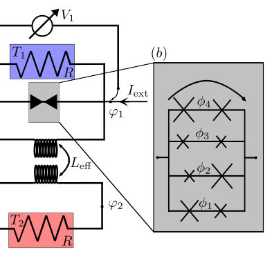
<figcaption class="paper-figure-caption"><b>Fig 1.</b> FIG. 1. (a) Circuit realizing the Feynman ratchet, with two degrees of freedom φ1, φ2. The upper branch, characterized by the phase φ1, consists of a superconducting diode (gray box) overdamped by a resistor R at temperature T1 in par- allel. The voltage across this branch is denoted by V1. This upper branch is tightly coupled via an inductance Leff to the lower branch characterized by the phase φ2. The lower branch contains a resistor R held at a different temperature T2. The voltage of the second branch, in the tight-coupling limit as- sumed is V2 ≈V1. The upper branch may be biased by the external current Iext. (b) For concreteness, we consider an implementation of the superconducting...</figcaption>
</figure>
<figure class="paper-figure-card">
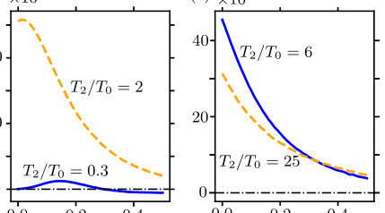
<figcaption class="paper-figure-caption"><b>Fig 2.</b> FIG. 2. Open-circuit voltage is shown in units of V0 = I0R, while the temperature T1 of the ‘cold’ reservoir is given in units of T0 = EJ/kB. The values of the ‘hot’ reservoir tem- perature T2 are indicated in the inset. The coupling strength is fixed at κ = ℏ2/(4e2EJLeff) = 0.1 for all curves. Panel (a) demonstrates that for T2 ≲2.3T0, the maximum voltage occurs at finite T1, whereas for T2 ≳2.3T0, the maximum is reached at T1 →0 [panel (b)]. The blue curve for T2 = 6T0 and T1 = 0 marks the overall maximum voltage V1 = 0.045V0 attainable at κ = 0.1.</figcaption>
</figure>
<figure class="paper-figure-card">

<figcaption class="paper-figure-caption"><b>Fig 3.</b> FIG. 3. Open-circuit voltage is shown in units of V0 = RI0, and the cold-reservoir temperature T1 is given in units of T0 = EJ/kB. The values of the dimensionless coupling constant κ are indicated in the inset. The hot-reservoir temperature is fixed at T2 = 5T0 for all curves. Panel (a) shows that for κ ≲0.04, the maximum voltage occurs at finite T1, whereas for κ ≳0.04 the maximum shifts to T1 →0, see panel (b). For consistency, the case κ = 0 is also included, where the voltage vanishes as expected.</figcaption>
</figure>
<figure class="paper-figure-card">
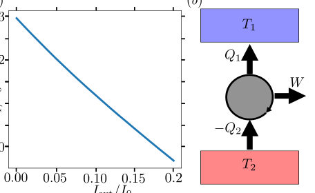
<figcaption class="paper-figure-caption"><b>Fig 4.</b> FIG. 4. (a) Circuit voltage in units of V0 = RI0 as a function of Iext in units of I0. The circuit parameters are κ = 0.1, T2 = 2.3T0 and T1 = 0. This panel demonstrates that the dependence of the voltage as a function of the external applied current is linear in our regime. The point of maximum power is given for the values of Iext in which the voltage takes half of its maximum value. (b) Heat flow when operated as a heat engine: the lower and upper branches of the circuit are presented respectively as hot and cold reservoirs. The circuit works as a heat engine, extracting the heat −Q2 from the hot reservoir, delivering Q1 to the cold reservoir while producing the work W = −Q1 −Q2.</figcaption>
</figure>
<figure class="paper-figure-card">
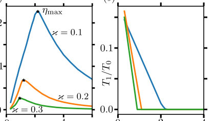
<figcaption class="paper-figure-caption"><b>Fig 5.</b> FIG. 5. Panel (a) shows the heat-engine efficiency η as a func- tion of the hot-reservoir temperature T2, given in units of T0, for different values of the coupling strengths κ. The maxi- mal efficiency is denoted by ηmax. As the coupling strength increases, the efficiency decreases. At the same time, the tem- perature T2 at which the efficiency reaches its maximum shifts toward lower values. This behavior is further illustrated in panel (b), which shows the corresponding cold-reservoir tem- perature T1 at maximum efficiency, also in units of T0. For sufficiently large T1, the dependence is approximately linear. As T1 approaches zero, however, the curves become increas- ingly smooth, as...</figcaption>
</figure>
</div>

<p><strong>Summary.</strong> This theoretical work proposes using a superconducting diode as a physical realization of a Feynman ratchet to build a nanoscale heat engine. By exploiting the diode's asymmetry and coupling it to a temperature gradient, the device generates work from thermal fluctuations. The analysis confirms its function as a heat engine and demonstrates its ability to operate in reverse as a Peltier cooler.</p>
<p><strong>Why it may be interesting.</strong> The work bridges concepts from non-equilibrium statistical mechanics (Feynman ratchets) with solid-state quantum phenomena (superconducting diodes), providing a concrete, tunable model for energy conversion driven by thermal gradients.</p>
<details>
<summary>Detailed structure</summary>
<p><strong>Main problem.</strong> The paper aims to realize a nanoscale heat engine by converting thermal energy into mechanical work using a superconducting diode acting as a Feynman ratchet.</p>
<p><strong>Main result.</strong> The setup successfully functions as a heat engine generating work solely from a temperature gradient, and it can also operate in reverse as a Peltier cooler.</p>
<p><strong>Method.</strong> The dynamics are analyzed using Langevin equations to model the superconducting phases coupled to two thermal reservoirs at different temperatures.</p>
<p><strong>Model / system.</strong> The physical system is a superconducting circuit incorporating a superconducting diode (modeled by Josephson junctions) coupled to two reservoirs at $T_1$ and $T_2$. The dynamics are governed by coupled Langevin equations.</p>
<p><strong>Key observables.</strong> Output power ($\dot{W}$), efficiency ($\eta$), open-circuit voltage ($V_1$), and the Seebeck coefficient ($S$).</p>
<p><strong>Important parameters / regimes.</strong> Temperature gradient ($\Delta T = T_2 - T_1$), coupling strength ($\kappa$), and external current ($I_{	ext{ext}}$).</p>
<p><strong>Assumptions / limitations.</strong> The analysis assumes a small effective inductance ($V_1 \approx V_2$) and that noise sources follow Gaussian distributions.</p>
<p><strong>Figures summary.</strong> Figures illustrate the circuit setup, the dependence of heat engine efficiency ($\eta$) on the hot reservoir temperature ($T_2$), and the reversal of heat flow when operating as a cooler.</p>
<p><strong>Paper structure.</strong> The paper introduces the physical model and the Feynman ratchet concept, develops the theoretical framework using Langevin equations, analyzes the steady-state operation for heat engine work extraction, and finally examines the reverse operation as a Peltier cooler.</p>
</details>
<details>
<summary>Abstract</summary>
<p>Feynman's ratchet illustrates how work can be extracted from thermal fluctuations in the presence of two heat baths at different temperatures. While some experimental realizations of the ratchet effect have been studied, most lack miniaturization, which is important for some applications. Here, we propose a physical implementation of Feynman's ratchet based on Josephson junctions exhibiting the superconducting diode effect. This setup functions as a heat engine that generates work solely from a temperature gradient via thermal fluctuations. We analyze its output power and efficiency, and, through the Seebeck coefficient, identify the conditions under which the device operates in reverse, functioning instead as a Peltier cooler.</p>
</details>
<p><sub><a href="#top">↑ back to top</a></sub></p>

<p><a id="paper-2610.17834"></a></p>
<h3 id="broadening-the-reflection-band-of-atomic-mirrors-by-engineering-the-emitter-waveguide-coupling"><a href="http://arxiv.org/abs/2610.17834v1">Broadening the reflection band of atomic mirrors by engineering the emitter-waveguide coupling</a></h3>
<p><strong>Authors:</strong> C. -Y. Lee, G. -D. Lin, H. H. Jen, K. -T. Lin<br>
<strong>Type:</strong> theory · <strong>Category:</strong> other · <strong>PDF:</strong> <a href="https://arxiv.org/pdf/2610.17834v1">https://arxiv.org/pdf/2610.17834v1</a><br>
<strong>Analysis basis:</strong> full PDF text, analyzed in chunks
<strong>Topic relevance:</strong> <code>interference shaping light</code> <strong>3/5</strong> · <code>Keldysh / 2PI / non-Gaussian methods</code> <strong>2/5</strong> · <code>Tavis-Cummings &amp; cavity-many-emitter</code> <strong>2/5</strong> · <code>analog quantum simulation</code> <strong>2/5</strong> · <code>driven-dissipative phase transition</code> <strong>2/5</strong> · <code>methods for driven-dissipative</code> <strong>2/5</strong> · <code>correlated / nonlocal dissipation</code> <strong>1/5</strong></p>
<div class="figure-strip-hint">↔ Scroll figures horizontally</div>
<div class="paper-figures-scroll">
<figure class="paper-figure-card">
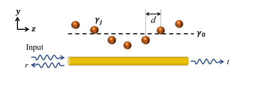
<figcaption class="paper-figure-caption"><b>Fig 1.</b> FIG. 1. Schematic illustration of a geometry-engineered atomic mir- ror in a waveguide QED system. N two-level emitters are coupled to a bidirectional 1D waveguide with uniform interatomic spacing d along the propagation axis (z axis). The local spontaneous decay rates γ j are modulated by tailored transverse displacements of the emitters relative to the waveguide axis. Because the guided mode is evanescent in the transverse direction, such displacements modify the local coupling strength exponentially.</figcaption>
</figure>
<figure class="paper-figure-card">
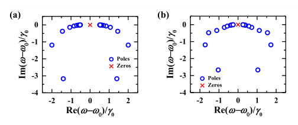
<figcaption class="paper-figure-caption"><b>Fig 2.</b> FIG. 3. Distribution of the collective poles ˜pn = pn −ω0 (blue cir- cles) in the complex frequency plane for N = 20 and φ0 = 0.5π. The N transmission zeros are exactly degenerate at the origin [Eq. (9)] and are indicated by a single marker. (a) Uniform array (η = 0): the deepest superradiant pole lies at Im( ˜p)/γ0 ≈−3.17, while the subradiant poles crowd against the real axis within the narrow win- dow 0.51 ≲|Re( ˜p)|/γ0 ≲0.56 and pin the window edge there. (b) Coupling-engineered array (η = 0.5, σ = 0.1): the radiative width is shared more evenly, the deepest pole is raised to Im( ˜p)/γ0 ≈−2.67 and the shallowest is lifted by an order of magnitude, and no single mode limits the band.</figcaption>
</figure>
<figure class="paper-figure-card">

<figcaption class="paper-figure-caption"><b>Fig 3.</b> FIG. 4. Pole distribution and spectral reconstruction for a toy- model system (N = 4) at the anti-Bragg condition (φ0 = 0.5π). (a),(b) Complex-plane distributions of the collective poles ˜pn = pn −ω0 (blue circles) for (a) the uniform array and (b) the coupling- engineered Gaussian array (η = 0.5, σ = 0.25). The N-fold degen- erate transmission zero at the origin is marked by a single red cross. Dashed circles indicate the non-amplifying criterion of Eq. (13). (c),(d) Individual mode factors Fn(∆) for (c) the uniform array, in which the two near-real subradiant poles leave the plotted range at |∆|/γ0 ≈0.48 and peak at Fmax n = 36, and (d) the Gaussian array, in which no factor exceeds 3.2...</figcaption>
</figure>
<figure class="paper-figure-card">

<figcaption class="paper-figure-caption"><b>Fig 4.</b> FIG. 5. High-reflectivity bandwidth w (defined by |r|2 &gt; 0.99). Dis- crete markers are scattering-matrix numerical results; solid curves are the semiclassical prediction of Eqs. (15)–(19). (a) w versus emit- ter number N at the anti-Bragg condition (φ0 = 0.5π), showing the 1/N contraction toward the bulk limit and its breakdown at small N, where too few emitters lie within the envelope for a local band edge to exist. (b) w versus interatomic phase φ0 for N = 100, η = 0.5, σ = 0.1. The bandwidth is minimal at the anti-Bragg point and grows on approach to either Bragg point. The semiclassical curve is drawn only over the interval in which Eq. (22) is satisfied. Out- side it (shaded) the...</figcaption>
</figure>
<figure class="paper-figure-card">

<figcaption class="paper-figure-caption"><b>Fig 5.</b> Figure 5(b) shows the bandwidth as a function of the inter- atomic phase φ0 at fixed N = 100. The window is narrowest at the anti-Bragg point and widens monotonically toward ei- ther Bragg point, following the growth of the bulk bandgap γmax/sinφ0. Over the central range, the semiclassical curve agrees with the exact result within a few percent, and the agreement degrades toward either Bragg point, as predicted by Eq. (22). The deviation grows from 0.7% at φ0 = π/2 to 3.8% at both φ0 = 0.2π and 0.8π, and to 17% at both φ0 = 0.1π and 0.9π. At these three phases, σN min(φ0,π −φ0) equals 15.7, 6.3 and 3.1. This deviation reflects the breakdown of</figcaption>
</figure>
</div>

<p><strong>Summary.</strong> This theoretical work demonstrates how tailoring the spatial coupling between emitters and a waveguide can engineer atomic mirrors to achieve broadband reflection. By implementing a Gaussian coupling profile, the paper shows that boundary-induced spectral limitations are overcome, leading to a much wider and flatter high-reflectivity window. This establishes spatial coupling engineering as a practical tool for advanced quantum photonic device design.</p>
<p><strong>Why it may be interesting.</strong> This work provides a concrete, controllable mechanism—spatial coupling engineering—to overcome fundamental limitations in designing high-performance photonic structures like atomic mirrors, which is highly relevant to quantum optics and open quantum systems.</p>
<details>
<summary>Detailed structure</summary>
<p><strong>Main problem.</strong> The paper addresses the challenge of broadening the reflection band of atomic mirrors, which is typically limited by boundary effects in finite arrays.</p>
<p><strong>Main result.</strong> By engineering the emitter-waveguide coupling profile (e.g., using Gaussian transverse displacements), the reflection bandwidth can be significantly broadened, suppressing unwanted Fabry-Perot oscillations.</p>
<p><strong>Method.</strong> The study combines exact scattering calculations with spectral factorization and a semiclassical WKB analysis applied to an effective non-Hermitian Hamiltonian.</p>
<p><strong>Model / system.</strong> The system is a finite waveguide Quantum Electrodynamics (QED) array of two-level emitters coupled to a 1D waveguide. The physics is modeled using an effective non-Hermitian Hamiltonian in the single-excitation subspace.</p>
<p><strong>Key observables.</strong> Reflection bandwidth, transmission zeros, collective poles, and the finite-size scaling of the bandwidth.</p>
<p><strong>Important parameters / regimes.</strong> The coupling profile width ($\sigma$), the number of emitters ($N$), and the interatomic phase ($\varphi_0$).</p>
<p><strong>Assumptions / limitations.</strong> The analysis assumes the rotating-wave approximation, linearizes photon dispersion, and neglects propagation delay across the array.</p>
<p><strong>Figures summary.</strong> Figures illustrate the reflection spectrum $|r|^2$ versus detuning ($\Delta$) for different coupling strengths, showing the transition from oscillatory behavior to a broad plateau.</p>
<p><strong>Paper structure.</strong> The paper progresses from defining the physical system and Hamiltonian, to applying advanced scattering formalisms, demonstrating the effect of coupling engineering on the spectrum, and finally deriving the finite-size scaling law for the bandwidth.</p>
</details>
<details>
<summary>Abstract</summary>
<p>We theoretically investigate single-photon coherent transport through a finite waveguide quantum electrodynamics (QED) array with spatially modulated emitter-waveguide couplings. By combining exact scattering calculations with spectral factorization and a semiclassical WKB analysis, we identify how the coupling profile controls the reflection bandwidth and its finite-size dependence. A Gaussian transverse displacement produces an exponential-of-Gaussian decay-rate profile that broadens the high-reflectivity window and suppresses the boundary-induced Fabry-Perot oscillations compared with a uniform array. The transmission zeros remain exactly degenerate at the atomic resonance for arbitrary positive coupling profiles at non-Bragg spacings. In contrast, the collective poles reorganize under the spatial modulation, redistributing their radiative widths and preventing individual subradiant resonances from terminating the reflection window. We further derive an algebraic 1/N scaling law for the contraction of the bandwidth toward its bulk value. The bulk bandwidth is determined by the largest local decay rate, whereas the finite-size correction increases as the profile becomes sharper, leading to an optimal profile width. These results establish spatial coupling engineering as a practical tool for designing broadband atomic mirrors in atom-nanofiber and circuit-QED platforms.</p>
</details>
<p><sub><a href="#top">↑ back to top</a></sub></p>

<p><a id="paper-2610.18225"></a></p>
<h3 id="ppvm-a-circuit-simulation-framework-for-digital-twins-of-quantum-processors"><a href="http://arxiv.org/abs/2610.18225v1">PPVM: A Circuit Simulation Framework for Digital Twins of Quantum Processors</a></h3>
<p><strong>Authors:</strong> Xiu-Zhe Luo, David Plankensteiner, Kai-Hsin Wu, Rob Patterson, Alexander Schuckert, Oriol Rubies-Bigorda, Refaat Ismail, Jonhas Colina, Neelay Fruitwala, Danylo Lykov, Tyson Jones, Stefan Krastanov, Rafael Haenel, Stefan Ostermann, Sheng-Tao Wang<br>
<strong>Type:</strong> both · <strong>Category:</strong> quantum information and computing · <strong>PDF:</strong> <a href="https://arxiv.org/pdf/2610.18225v1">https://arxiv.org/pdf/2610.18225v1</a><br>
<strong>Analysis basis:</strong> full PDF text, analyzed in chunks
<strong>Topic relevance:</strong> <code>QC/QI experiment</code> <strong>3/5</strong> · <code>methods for driven-dissipative</code> <strong>3/5</strong> · <code>correlated / nonlocal dissipation</code> <strong>2/5</strong> · <code>driven-dissipative phase transition</code> <strong>2/5</strong> · <code>quantum measurements</code> <strong>2/5</strong> · <code>Rydberg arrays</code> <strong>1/5</strong> · <code>analog quantum simulation</code> <strong>1/5</strong></p>
<div class="figure-strip-hint">↔ Scroll figures horizontally</div>
<div class="paper-figures-scroll">
<figure class="paper-figure-card">
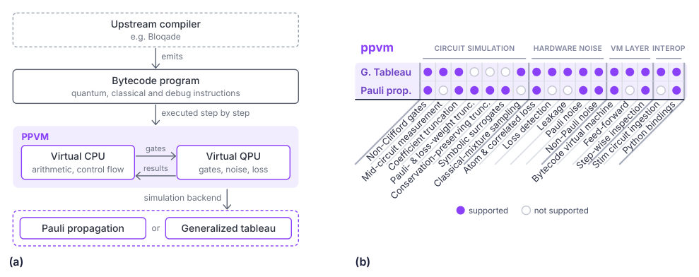
<figcaption class="paper-figure-caption"><b>Fig 1.</b> Figure 1: PPVM overview. (a) An upstream compiler emits bytecode containing quantum, classical, and debug instructions. The virtual CPU executes arithmetic and control flow and dispatches quantum instructions to the virtual QPU. The virtual QPU applies gates and hardware noise, including independent and correlated atom loss, using either generalized tableau simulation or Pauli propagation. The tableau backend returns measurement outcomes for feed-forward, while the Pauli propagation backend returns expectation values. Breakpoints pause execution for inspection of the classical execution state and the quantum state or propagated observable. (b) Features supported by generalized tableau...</figcaption>
</figure>
<figure class="paper-figure-card">
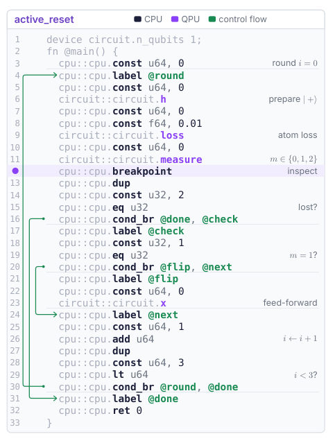
<figcaption class="paper-figure-caption"><b>Fig 2.</b> Figure 2: PPVM bytecode program (text format) for active reset with loss detection. In each of up to three rounds, the qubit is prepared in |+⟩, subjected to atom loss with probability 1%, and measured. The breakpoint (•) pauses execution immediately after the measurement so that the full machine state can be inspected. If the atom is lost (m = 2), the program ends. Otherwise, an X gate is applied when m = 1, ensuring that a surviving qubit ends the round in |0⟩(feed-forward). CPU instructions are shown in black, QPU instructions in purple, and control flow (branch targets and the jumps to them) in green. The loop counter (round) is denoted by i.</figcaption>
</figure>
<figure class="paper-figure-card">
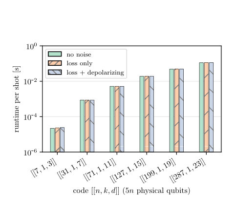
<figcaption class="paper-figure-caption"><b>Fig 3.</b> Figure 3: Runtime of loss-aware MSD with different codes. For the code sizes and noise rates shown, adding loss and depolarizing noise produces only a small runtime overhead. At a total of 1435 qubits, the runtime per shot is about 0.1s. The noise probabilities are ploss = pdpl = 10−4. All runtimes were measured via PPVM’s Python bindings on a single thread of an Apple M4 (24 GB RAM).</figcaption>
</figure>
<figure class="paper-figure-card">
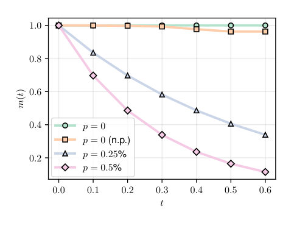
<figcaption class="paper-figure-caption"><b>Fig 4.</b> Figure 4: Loss-induced decay of the summed spin corre- lation m(t) in the Heisenberg model. ℓ= 3 square lattice (n = 9 qubits), J = 1, dt = 0.1, 6 first-order Trotter steps. Each two-qubit interaction is decomposed into single-qubit Cliffords, RZ rotations, and CZ gates, with a correlated loss channel [pLL, pLQ, pLN] = [p/3, p/3, p/3] applied at every CZ gate. We chose the coefficient thresh- old 5 × 10−3. Except for the curve annotated as non- preserving (n.p.), all runs use the protected set {Zq}.</figcaption>
</figure>
<figure class="paper-figure-card">
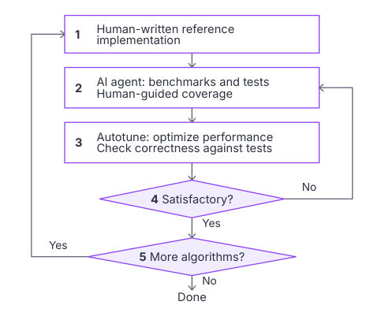
<figcaption class="paper-figure-caption"><b>Fig 5.</b> Figure 5: The harness-engineering workflow used to develop PPVM. (1) A human provides a reference im- plementation with autocompletion-level AI assistance. (2) An AI agent develops benchmarks and tests under human guidance. (3) The autotune evaluates candidate optimizations using benchmarks, reference comparisons, and tests. (4) If performance is unsatisfactory, steps 2–3 repeat. (5) The workflow returns to step 1 for the next algorithm, or finishes if none remain.</figcaption>
</figure>
</div>

<p><strong>Summary.</strong> This paper presents PPVM, an open-source virtual machine framework designed to create digital twins for quantum processors, capable of simulating complex noise models like atom loss. It unifies Pauli propagation and tableau simulation to support arbitrary classical control flow, making it a powerful tool for benchmarking next-generation quantum hardware.</p>
<p><strong>Why it may be interesting.</strong> The explicit focus on integrating hardware noise (like atom loss) and classical control flow into a unified simulation framework is crucial for benchmarking and developing fault-tolerant quantum computation protocols.</p>
<details>
<summary>Detailed structure</summary>
<p><strong>Main problem.</strong> Verifying next-generation quantum hardware requires jointly emulating the quantum processor, hardware noise, and classical control/decoding logic.</p>
<p><strong>Main result.</strong> The authors introduce PPVM, a framework that successfully integrates loss-aware magic state distillation on thousands of qubits and demonstrates performance scaling improvements using GPU acceleration for Pauli propagation.</p>
<p><strong>Method.</strong> They developed the Programmable Pauli Virtual Machine (PPVM), which unifies Pauli propagation (Heisenberg picture) and generalized tableau simulation (Schrödinger picture) under a single bytecode-driven virtual machine.</p>
<p><strong>Model / system.</strong> The framework is designed for digital twins of quantum processors, specifically modeling neutral-atom hardware that can experience loss, requiring the simulation of three-level systems { |0&gt;, |1&gt;, |L&gt; }.</p>
<p><strong>Key observables.</strong> Expectation values of observables $\langle O 
angle$, total loss probability $p_{	ext{tot}}$, and runtime performance metrics comparing different simulation backends.</p>
<p><strong>Important parameters / regimes.</strong> The simulation handles arbitrary classical control flow, measurement-conditioned feed-forward, and models both independent and correlated atom-loss channels.</p>
<p><strong>Assumptions / limitations.</strong> The Pauli propagation method can suffer from exponential growth in the number of observable terms, and the simulation often assumes that loss/reset processes do not generate coherences between the computational and loss subspaces.</p>
<p><strong>Figures summary.</strong> Figures illustrate the PPVM bytecode structure for active reset with loss detection, benchmark comparisons show runtime scaling for TFIM and Heisenberg models across CPU and GPU backends, and a comparison highlights the necessity of PPVM's control flow over purely compiled methods when loss is involved.</p>
<p><strong>Paper structure.</strong> The paper first introduces the need for joint emulation, details the PPVM architecture and its two simulation backends (Pauli/Tableau), extends these methods to model complex hardware noise like atom loss, and concludes with extensive benchmarking comparing PPVM against state-of-the-art simulators on various models.</p>
</details>
<details>
<summary>Abstract</summary>
<p>Quantum computers are approaching the early fault-tolerant regime. Verifying the next generation of quantum hardware requires joint emulation of the quantum processor, hardware noise, and classical control and decoding logic. We introduce the Programmable Pauli Virtual Machine (PPVM), an open-source framework for digital twins of quantum processors. PPVM unifies Pauli propagation and generalized tableau simulation under a common abstraction within a single virtual machine. Its bytecode supports arbitrary classical control flow, with measurement-conditioned feed-forward available in the generalized tableau backend. For neutral-atom hardware, we derive independent and correlated atom-loss channels and integrate them into both backends. We demonstrate loss-aware magic state distillation on over a thousand physical qubits and integration with classical decoding through Bloqade QEC Studio.</p>
</details>
<p><sub><a href="#top">↑ back to top</a></sub></p>

<p><a id="paper-2610.18750"></a></p>
<h3 id="finite-temperature-fredholm-determinants-for-dynamical-correlation-functions"><a href="http://arxiv.org/abs/2610.18750v1">Finite temperature Fredholm determinants for dynamical correlation functions</a></h3>
<p><strong>Authors:</strong> Oleksandr Gamayun<br>
<strong>Type:</strong> theory · <strong>Category:</strong> statistical mechanics · <strong>PDF:</strong> <a href="https://arxiv.org/pdf/2610.18750v1">https://arxiv.org/pdf/2610.18750v1</a><br>
<strong>Analysis basis:</strong> full PDF text, analyzed in chunks
<strong>Topic relevance:</strong> <code>Keldysh / 2PI / non-Gaussian methods</code> <strong>3/5</strong> · <code>non-equilibrium universality</code> <strong>3/5</strong> · <code>analog quantum simulation</code> <strong>2/5</strong> · <code>methods for driven-dissipative</code> <strong>2/5</strong> · <code>correlated / nonlocal dissipation</code> <strong>1/5</strong> · <code>driven-dissipative phase transition</code> <strong>1/5</strong> · <code>scars &amp; prethermalization</code> <strong>1/5</strong></p>
<div class="figure-strip-hint">↔ Scroll figures horizontally</div>
<div class="paper-figures-scroll">
<figure class="paper-figure-card">
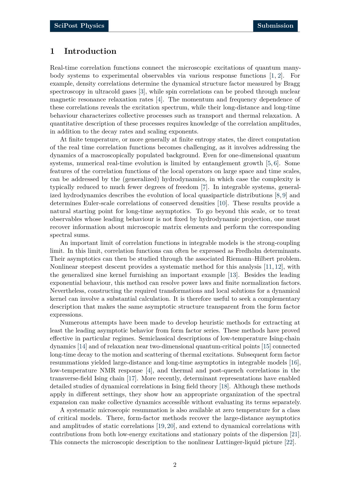
<figcaption class="paper-figure-caption"><b>Fig 1.</b> Low-resolution page preview, page 2</figcaption>
</figure>
<figure class="paper-figure-card">
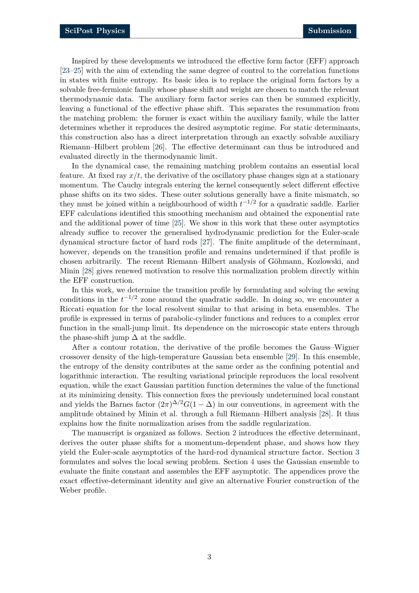
<figcaption class="paper-figure-caption"><b>Fig 2.</b> Low-resolution page preview, page 3</figcaption>
</figure>
<figure class="paper-figure-card">

<figcaption class="paper-figure-caption"><b>Fig 3.</b> Low-resolution page preview, page 4</figcaption>
</figure>
<figure class="paper-figure-card">

<figcaption class="paper-figure-caption"><b>Fig 4.</b> Low-resolution page preview, page 5</figcaption>
</figure>
<figure class="paper-figure-card">
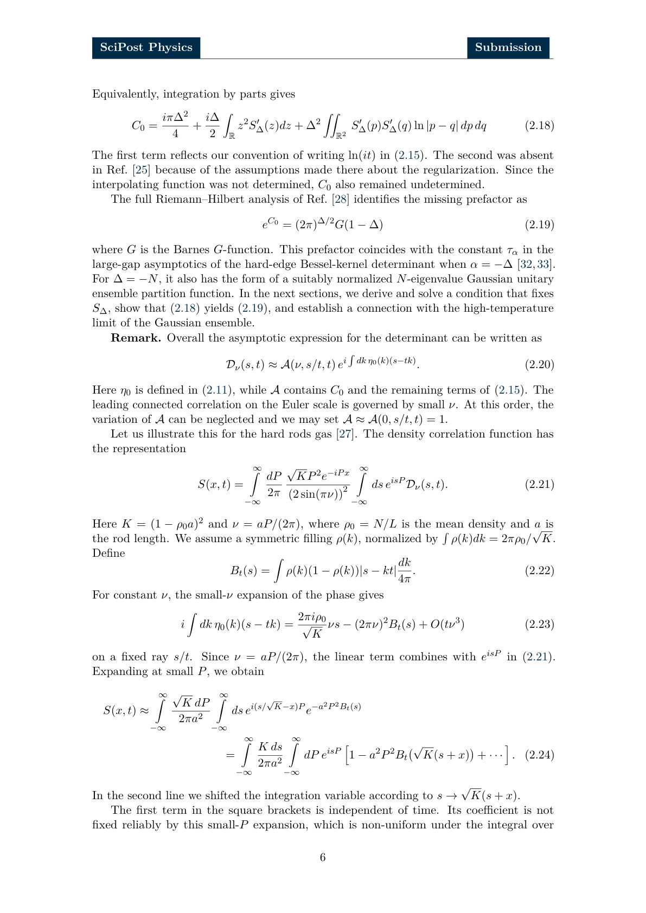
<figcaption class="paper-figure-caption"><b>Fig 5.</b> Low-resolution page preview, page 6</figcaption>
</figure>
</div>

<p><strong>Summary.</strong> This paper provides a detailed mathematical analysis of the long-time behavior of dynamical correlation functions using finite-temperature Fredholm determinants. By employing the Effective Form Factor method, the authors determine the asymptotic profile and fix the necessary finite normalization constant. The results confirm theoretical predictions from generalized hydrodynamics for systems like hard rods.</p>
<p><strong>Why it may be interesting.</strong> The rigorous mathematical techniques used to analyze the long-time dynamics of correlation functions are highly relevant for understanding non-equilibrium dynamics in quantum many-body systems, which is a core area of modern AMO and condensed matter theory.</p>
<details>
<summary>Detailed structure</summary>
<p><strong>Main problem.</strong> The paper studies the long-time, large-distance asymptotics of finite-temperature dynamical Fredholm determinants for correlation functions.</p>
<p><strong>Main result.</strong> The analysis successfully determines the transition profile using parabolic-cylinder functions and fixes the finite normalization constant, showing consistency with generalized hydrodynamics predictions.</p>
<p><strong>Method.</strong> The authors employ the Effective Form Factor approach, splitting the Fredholm determinant into factors, and solving associated Riccati equations derived from Wronskian analysis.</p>
<p><strong>Model / system.</strong> The study concerns dynamical correlation functions in quantum many-body systems, modeled via generalized sine-kernel Fredholm determinants, with connections drawn to the hard-rod gas and the Gaussian $\beta$ ensemble.</p>
<p><strong>Key observables.</strong> Dynamical Fredholm determinant $D_\nu(x, t)$, effective phase shift, and the transition profile.</p>
<p><strong>Important parameters / regimes.</strong> Finite temperature, long-time/large-distance limits, and the jump parameter $\Delta$.</p>
<p><strong>Assumptions / limitations.</strong> The analysis assumes that the outer asymptotics are sufficient for the leading behavior, and it relies on solving sewing conditions around a quadratic saddle point.</p>
<p><strong>Figures summary.</strong> Not specified.</p>
<p><strong>Paper structure.</strong> The paper proceeds by establishing the asymptotic form of the determinant, determining the transition profile via solving sewing conditions, and finally fixing the finite normalization constant by matching results from the high-temperature Gaussian ensemble analysis.</p>
</details>
<details>
<summary>Abstract</summary>
<p>We study the long-time, large-distance asymptotics of finite-temperature dynamical Fredholm determinants using effective form factors. The method expresses these asymptotics as a functional of an effective phase shift. We determine its two branches on either side of a quadratic stationary point and the transition profile joining them. The profile is expressed through parabolic-cylinder functions. Its connection to the high-temperature Gaussian $β$ ensemble fixes the finite normalization, in agreement with an independent Riemann--Hilbert analysis. We also show that the leading exponential asymptotics suffice to recover the Euler-scale prediction of generalized hydrodynamics for the dynamical structure factor of hard rods.</p>
</details>
<p><sub><a href="#top">↑ back to top</a></sub></p>

<p><a id="paper-2610.17322"></a></p>
<h3 id="optical-interferometric-tools-for-probing-memory-effects"><a href="http://arxiv.org/abs/2610.17322v1">Optical interferometric tools for probing memory effects</a></h3>
<p><strong>Authors:</strong> Saheli Mukherjee, Bivas Mallick, Samyadeb Bhattacharya, Ananda G. Maity, A. S. Majumdar<br>
<strong>Type:</strong> theory · <strong>Category:</strong> quantum information and computing · <strong>PDF:</strong> <a href="https://arxiv.org/pdf/2610.17322v1">https://arxiv.org/pdf/2610.17322v1</a><br>
<strong>Analysis basis:</strong> full PDF text, analyzed in chunks
<strong>Topic relevance:</strong> <code>correlated / nonlocal dissipation</code> <strong>3/5</strong> · <code>interference shaping light</code> <strong>3/5</strong> · <code>quantum measurements</code> <strong>3/5</strong> · <code>driven-dissipative phase transition</code> <strong>2/5</strong> · <code>methods for driven-dissipative</code> <strong>2/5</strong></p>
<div class="figure-strip-hint">↔ Scroll figures horizontally</div>
<div class="paper-figures-scroll">
<figure class="paper-figure-card">

<figcaption class="paper-figure-caption"><b>Fig 1.</b> Figure 1: The interferometer setup consists of two 50 −50 beam splitters (denoted by BS I and BS II), a phase shifter (PS(ϕ)), two mirrors (Mirrors I and II) and a detector. |0⟩and ρ represent the inputs to the path and internal dof. U represents a controlled unitary acting on the internal dof as target. M is a measurement performed along path |0⟩in the computational basis.</figcaption>
</figure>
<figure class="paper-figure-card">
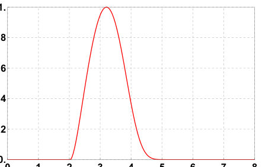
<figcaption class="paper-figure-caption"><b>Fig 2.</b> Figure 2: Visibility-based BLP measure of non-Markovianity as a function of the Ohmicity parameter for dephasing dynamics.</figcaption>
</figure>
<figure class="paper-figure-card">
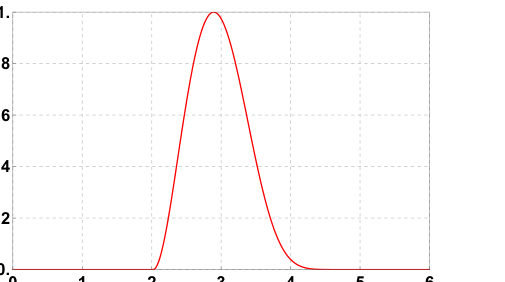
<figcaption class="paper-figure-caption"><b>Fig 3.</b> Figure 3: Visibility-based BLP measure of non-Markovianity as a function of the Ohmicity parameter for depolarizing dynamics.</figcaption>
</figure>
</div>

<p><strong>Summary.</strong> This paper proposes using optical interferometry—specifically measuring phase shifts and visibility—as a simple and powerful tool to detect non-Markovian memory effects in open quantum systems. By showing that visibility revival signals information backflow, it offers an experimentally feasible alternative to complex theoretical characterizations of quantum noise. This has direct implications for quantum sensing and quantum information processing.</p>
<p><strong>Why it may be interesting.</strong> This work provides a direct, operational, and experimentally accessible methodology for probing memory effects, which is crucial for understanding noise in quantum technologies like quantum sensing and NISQ devices.</p>
<details>
<summary>Detailed structure</summary>
<p><strong>Main problem.</strong> The paper addresses the challenge of experimentally detecting and characterizing non-Markovian memory effects in open quantum systems.</p>
<p><strong>Main result.</strong> It establishes that interferometric observables, specifically phase shifts and visibility, provide a simple and experimentally feasible framework to witness non-Markovianity via the detection of information backflow.</p>
<p><strong>Method.</strong> The authors utilize the principles of quantum interference, relating the decay or revival of visibility and phase shifts to the underlying dynamics of the open quantum system.</p>
<p><strong>Model / system.</strong> The analysis is framed around open quantum systems undergoing decoherence, modeled using CPTP maps, and is illustrated using the setup of a Mach-Zehnder interferometer.</p>
<p><strong>Key observables.</strong> Interferometric visibility, phase shift, and the $l_1$-norm of coherence.</p>
<p><strong>Important parameters / regimes.</strong> The dynamics are characterized by time-dependent decay rates ($\gamma(t)$) and the distinction between Markovian (CP-divisible) and non-Markovian evolution.</p>
<p><strong>Assumptions / limitations.</strong> The approach assumes that the measurement of phase shift and visibility is sufficient to characterize the non-Markovian nature, avoiding the need for ancillary subsystems.</p>
<p><strong>Figures summary.</strong> Figure 3 illustrates the Visibility-based BLP measure of non-Markovianity as a function of the Ohmicity parameter for depolarizing dynamics.</p>
<p><strong>Paper structure.</strong> The paper first introduces the problem of non-Markovianity, then develops the theoretical link showing that interferometric witnesses can detect it, and finally applies this framework to specific examples of non-Markovian dynamics.</p>
</details>
<details>
<summary>Abstract</summary>
<p>Recent efforts to detect non-Markovian memory have become increasingly important, motivated by the broad relevance of memory effects in quantum information processing, metrology, and thermodynamic engines. Here, we show that interferometric methods, particularly the phase shift and visibility, provide an experimentally accessible framework for probing environmental effects and witnessing non-Markovian dynamics. Specifically, suitably constructed witness operators enable the detection of non-Markovianity through measurable phase shifts in the interference pattern. Furthermore, we prove that the interferometric visibility is monotonically non-increasing under incoherent CP-divisible (Markovian) dynamics. Consequently, any revival of the optimized visibility constitutes a sufficient signature of information backflow and hence non-Markovianity. The effectiveness of the proposed phase-based and visibility approaches is illustrated for representative examples of non-Markovian dynamics. Our results offer a simple and experimentally feasible framework for probing memory effects, with potential applications in quantum sensing and noisy intermediate-scale quantum devices.</p>
</details>
<p><sub><a href="#top">↑ back to top</a></sub></p>

<p><a id="paper-2610.18131"></a></p>
<h3 id="spectrally-enhanced-gravitational-redshift-signals-in-photonic-interferometry"><a href="http://arxiv.org/abs/2610.18131v1">Spectrally enhanced gravitational redshift signals in photonic interferometry</a></h3>
<p><strong>Authors:</strong> Jerzy Paczos, Piotr T. Grochowski, Natalia Bruno, Emanuele Distante, Stephan Welte, Magdalena Zych<br>
<strong>Type:</strong> theory · <strong>Category:</strong> other · <strong>PDF:</strong> <a href="https://arxiv.org/pdf/2610.18131v1">https://arxiv.org/pdf/2610.18131v1</a><br>
<strong>Analysis basis:</strong> full PDF text, analyzed in chunks
<strong>Topic relevance:</strong> <code>analog quantum simulation</code> <strong>3/5</strong> · <code>interference shaping light</code> <strong>3/5</strong> · <code>quantum optics experiment</code> <strong>3/5</strong> · <code>Tavis-Cummings &amp; cavity-many-emitter</code> <strong>2/5</strong> · <code>quantum measurements</code> <strong>1/5</strong></p>
<div class="figure-strip-hint">↔ Scroll figures horizontally</div>
<div class="paper-figures-scroll">
<figure class="paper-figure-card">
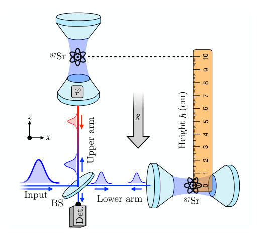
<figcaption class="paper-figure-caption"><b>Fig 1.</b> Figure 1: Cavity-quantum-electrodynamics-enhanced photonic interferometry in a gravitational field. An input photon is split at a beam splitter (BS) between the arms of a Michelson interferometer, which terminate in identical optical scatterers positioned at different heights, each implemented as a cavity coupled to an ultranarrow atomic transition. Due to the gravitational redshift, the two otherwise identical scatterers are probed at different detunings; the reflected am- plitudes therefore differ in magnitude and phase, producing a gravitationally induced change in the output interference visibility and phase. An externally controlled phase φ in the upper arm is used to scan the fringes.</figcaption>
</figure>
<figure class="paper-figure-card">

<figcaption class="paper-figure-caption"><b>Fig 2.</b> Figure 2: Gravitational signatures in photon interfer- ence. (a) Reflection probability R(∆) and (b) reflection phase ϕr(∆) of a single-sided cavity-QED scatterer versus detun- ing ∆/γ, for C = 0.2, 0.5, and 1. The dashed vertical lines represent the photon detuning in each arm for: (a) upper-arm resonance and (b) symmetric detuning. (c),(d) Detection prob- ability P0(φ) at one output port as a function of the scanned interferometer phase φ, for three lower-arm probe detunings: a far-detuned reference ∆l ≫γ (blue), upper-arm-resonance ∆l = ωg (orange), and symmetric detuning ∆l = ωg/2 (green), where ωg ≡|δωg| is evaluated at h = 10 cm. (c) At h = 0, all settings yield full-contrast fringes...</figcaption>
</figure>
<figure class="paper-figure-card">
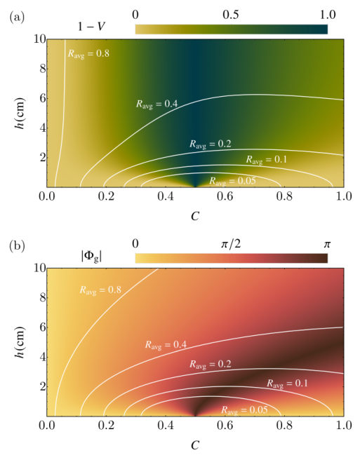
<figcaption class="paper-figure-caption"><b>Fig 3.</b> Figure 3: Centimetre-scale gravitational redshifts produce large interferometric signals. (a) Visibility loss 1 −V for the 87Sr clock transition as a function of height separation h and atom–cavity cooperativity C, evaluated at the upper- arm-resonance operating point, ∆u = 0 and ∆l = −δωg. At C = 0.5, the reflected amplitude from the resonant arm vanishes, so the reflected photon carries complete which-path information, and the visibility is completely lost. White con- tours show the average reflection probability Ravg = (Rl + Ru)/2, which quantifies the fraction of photons contributing to the reflected-output signal. (b) Gravity-induced phase dif- ference |Φg| evaluated at the...</figcaption>
</figure>
<figure class="paper-figure-card">
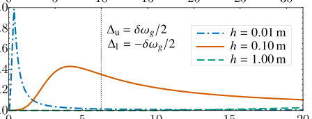
<figcaption class="paper-figure-caption"><b>Fig 4.</b> Figure 4: Finite-bandwidth response of the interferomet- ric signatures. Visibility and phase response for a Gaussian probe spectrum with angular-frequency bandwidth σ. (a) Ef- fective visibility loss 1 −V eff for the upper-arm-resonance operating point, ∆u = 0 and ∆l = −δωg. (b) Effec- tive gravity-induced phase shift |Φeff g |/π for the symmetric- detuning operating point, ∆u = δωg/2 and ∆l = −δωg/2. (c) Effective visibility loss for the symmetric detuning. The curves correspond to different vertical separations h for the 87Sr clock transition and C = 0.5. The lower horizontal axis gives the dimensionless bandwidth σ/γ, while the upper axis gives the corresponding Gaussian full width at...</figcaption>
</figure>
<figure class="paper-figure-card">

<figcaption class="paper-figure-caption"><b>Fig 5.</b> Figure 5: Interferometric response versus cooperativity at symmetric detuning. (a) Effective visibility loss 1 − V eff and (b) effective gravity-induced phase shift |Φeff g |/π versus atom–cavity cooperativity C, for probe linewidths ∆νFWHM = 10, 20, and 50 mHz. The curves are calculated for h = 10 cm and symmetric detuning, ∆u = −∆l = δωg/2.</figcaption>
</figure>
</div>

<p><strong>Summary.</strong> This paper proposes a novel method to test gravitational redshift effects on quantum interference by coupling photonic interferometers to atomic scatterers. Instead of requiring vast optical paths, it leverages spectral enhancement via ultranarrow atomic resonances to generate large, measurable phase shifts even over small height differences. The theoretical framework compares cavity-QED and waveguide-QED implementations to assess feasibility.</p>
<p><strong>Why it may be interesting.</strong> This work is highly relevant as it uses advanced quantum optics techniques (cavity QED) to probe fundamental physics (GR), providing a concrete, near-term experimental roadmap for testing quantum gravity effects.</p>
<details>
<summary>Detailed structure</summary>
<p><strong>Main problem.</strong> The paper addresses the challenge of testing the intersection of quantum mechanics and general relativity by detecting minute gravitational redshift effects on quantum interference.</p>
<p><strong>Main result.</strong> It proposes replacing the need for kilometer-scale optical paths with a spectral enhancement mechanism using atomic resonances, allowing for tabletop tests with centimeter-scale height differences.</p>
<p><strong>Method.</strong> The analysis involves modeling the interaction of photons in an interferometer with atom-cavity scatterers, deriving expressions for reflection and transmission amplitudes based on detuning.</p>
<p><strong>Model / system.</strong> The physical system is a photonic interferometer (Michelson or Mach-Zehnder) where the arms are coupled to optical scatterers based on ultranarrow atomic transitions (cavity-QED or waveguide-QED).</p>
<p><strong>Key observables.</strong> Interference visibility ($V$), gravity-induced phase shift ($\Phi_g$), reflection probability ($R(\Delta)$), and transmission probability ($T(\Delta)$).</p>
<p><strong>Important parameters / regimes.</strong> Cooperativity ($C$), cavity linewidth ($\kappa$), atomic linewidth ($\gamma$), and the gravitational redshift ($\delta\omega_g$).</p>
<p><strong>Assumptions / limitations.</strong> The analysis often assumes the lossless cavity limit ($\kappa_{loss} = 0$) and operates in the regime where the gravitational shift is comparable to or larger than the resonance linewidth ($\delta\omega_g \gtrsim \gamma$).</p>
<p><strong>Figures summary.</strong> Figures illustrate the interferometer setup, showing how gravitational redshift causes path-dependent detunings, leading to measurable dips in probability or phase shifts in the output signals.</p>
<p><strong>Paper structure.</strong> The paper develops the theory by first analyzing the basic reflection/transmission response of a single scatterer, then applies this to both Michelson and Mach-Zehnder interferometer geometries, comparing cavity-QED and waveguide-QED implementations.</p>
</details>
<details>
<summary>Abstract</summary>
<p>Quantum mechanics and general relativity are remarkably successful, yet their joint predictions remain beyond direct experimental reach. Photonic interferometers operating in a gravitational field offer a promising route to test this regime: gravitational redshift differentiates photon propagation between vertically separated arms, leading to a predicted phase shift and reduction in interference visibility. These effects are minute on laboratory scales, motivating existing proposals to consider large interferometer areas to accumulate them geometrically. Indeed, such schemes typically require kilometre-scale optical paths to produce appreciable interferometric signals. Here, we propose a strategy that replaces geometric accumulation with spectral enhancement by coupling the two interferometer arms to optical scatterers based on ultranarrow atomic transitions. These transitions serve as local spectral references: gravitational redshift changes the photon's detuning from each resonance, producing large differences in reflection amplitude and hence substantial visibility loss and interferometric phase shift already for centimetre-scale height differences. We quantify the experimental requirements and assess the feasibility of implementation with current or near-term technology. Our proposal thus opens a route to tabletop optical tests of the interplay between quantum mechanics and general relativity.</p>
</details>
<p><sub><a href="#top">↑ back to top</a></sub></p>

<p><a id="paper-2610.18722"></a></p>
<h3 id="superexchange-coupling-between-a-dilute-gd3-probe-and-orphan-spins-in-a-valence-bond-glass"><a href="http://arxiv.org/abs/2610.18722v1">Superexchange coupling between a dilute Gd3+ probe and orphan spins in a valence-bond glass</a></h3>
<p><strong>Authors:</strong> Patrick Colgan, Artur Solodovnyk, Jeremy P. Carlo, Scott Dietrich<br>
<strong>Type:</strong> experiment · <strong>Category:</strong> disordered systems and neural networks · <strong>PDF:</strong> <a href="https://arxiv.org/pdf/2610.18722v1">https://arxiv.org/pdf/2610.18722v1</a><br>
<strong>Analysis basis:</strong> full PDF text, analyzed in chunks
<strong>Topic relevance:</strong> <code>analog quantum simulation</code> <strong>3/5</strong> · <code>quantum measurements</code> <strong>3/5</strong> · <code>correlated / nonlocal dissipation</code> <strong>2/5</strong> · <code>driven-dissipative phase transition</code> <strong>2/5</strong> · <code>methods for driven-dissipative</code> <strong>1/5</strong> · <code>scars &amp; prethermalization</code> <strong>1/5</strong></p>
<div class="figure-strip-hint">↔ Scroll figures horizontally</div>
<div class="paper-figures-scroll">
<figure class="paper-figure-card">
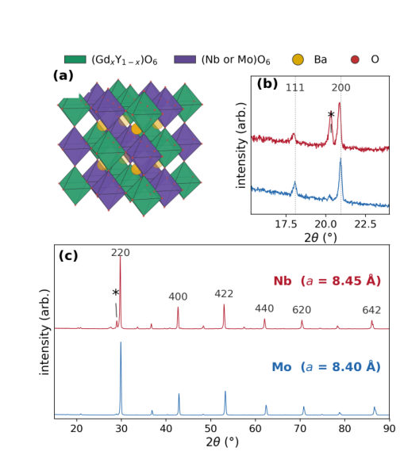
<figcaption class="paper-figure-caption"><b>Fig 1.</b> FIG. 1. (a) Ordered double-perovskite structure of Ba2(GdxY1−x)B′O6 (B′ = Nb or Mo), with the magnetic Gd3+ dopant dilute on the Y3+ site. (b) Low-angle zoom of the (111) superlattice reflection that marks B-site ordering, beside the (200) fundamental reflection. (c) Powder x-ray diffraction of the x = 0.05 samples (Nb, top; Mo, bottom), indexed to single-phase cubic Fm¯3m. Asterisks in (b) and (c) mark reflections of a minor unreacted Y2O3 second phase, much stronger in the Nb sample; the low-angle (211) line in (b) is resolved only in the niobate.</figcaption>
</figure>
<figure class="paper-figure-card">
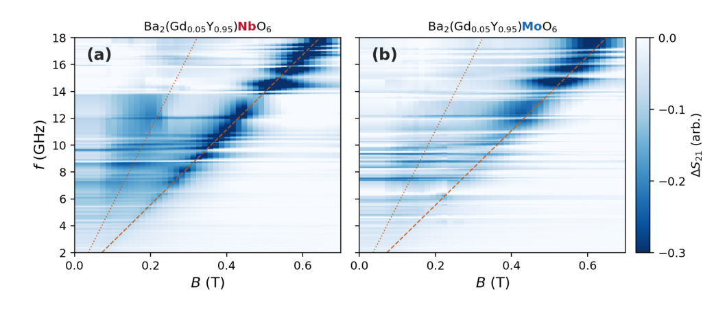
<figcaption class="paper-figure-caption"><b>Fig 2.</b> FIG. 2. Broadband field–frequency resonance maps at 5 K for the (a) niobate and (b) molybdate hosts at 5% Gd; the panel titles give the full composition Ba2(Gd0.05Y0.95)B′O6 (B′ = Nb, Mo), with the B′-site cation highlighted. The sequential color scale is the transmission ∆S21(B, f) after subtracting the non-resonant CPW background determined column-by-column in the lineshape fit (Sec. II E), running from white (no resonant response) to navy (deepest absorption). The main Gd3+ resonance is the band that disperses linearly from the origin; the dashed line is f = g (µB/h) B with the fitted g (1.992 for Nb, 1.979 for Mo) from the column-by-column analysis, and the dotted line marks the...</figcaption>
</figure>
<figure class="paper-figure-card">
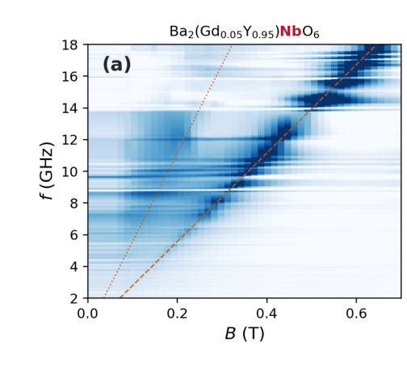
<figcaption class="paper-figure-caption"><b>Fig 3.</b> Figure 3 shows representative field-swept absorption spectra ∆|S21|(B) for the Nb and Mo hosts at three fre- quencies, together with the two-Dysonian fits. Each spec- trum is well described by a main Gd3+ resonance and a weaker half-field satellite on a smooth non-resonant back- ground, with comparable fit quality across the resolved frequency range and for both hosts. At fixed frequency the Mo-host resonance is visibly broader than that of the Nb host.</figcaption>
</figure>
<figure class="paper-figure-card">

<figcaption class="paper-figure-caption"><b>Fig 4.</b> FIG. 3. Field-swept absorption ∆|S21|(B) at 5 K for the x = 0.05 Nb host (left column) and Mo host (right column) at three representative frequencies. Grey points are data. Curves show the two-Dysonian fit decomposed into the main Gd3+ line, the half-field satellite, and their sum.</figcaption>
</figure>
<figure class="paper-figure-card">

<figcaption class="paper-figure-caption"><b>Fig 5.</b> FIG. 4. Main-line full width at half maximum versus fre- quency at 5 K, for 2% Gd (left) and 5% Gd (right), Nb (red) and Mo (blue). Points are per-column widths; solid lines are robust-median values with ±1 standard-error bands. Dot- ted lines in the right panel mark the 2% medians. From 2% to 5% the Nb width rises by a resolved ≈8 mT (Gd– Gd dipolar broadening), while the Mo width is unchanged (concentration-independent host coupling). Because the two concentrations of a given host are analyzed by the identical procedure, the background-modeling systematic (±9 mT Nb, ±16 mT Mo) shifts both by the same amount and so drops out of the 2%-to-5% difference, even though it remains in each...</figcaption>
</figure>
</div>

<p><strong>Summary.</strong> This work uses Electron Paramagnetic Resonance on a $  ext{Gd}^{3+}$ probe to study the elusive "orphan" spins in a valence-bond-glass material. By comparing magnetic and nonmagnetic hosts, the researchers determined that the excess broadening is caused by a superexchange interaction, not simple dipolar coupling. This provides a detailed, two-pronged probe (static linewidth and dynamic satellite) into the coupling mechanisms of these disordered spins.</p>
<p><strong>Why it may be interesting.</strong> The use of EPR to distinguish between static (linewidth) and dynamic (satellite collapse) coupling mechanisms in a glassy magnetic system is highly relevant to understanding quantum dynamics in disordered quantum materials.</p>
<details>
<summary>Detailed structure</summary>
<p><strong>Main problem.</strong> The paper aims to characterize the coupling and dynamics of residual paramagnetic "orphan" spins within a valence-bond-glass state, which are difficult to probe using standard bulk magnetic measurements.</p>
<p><strong>Main result.</strong> The excess linewidth in the $  ext{Gd}^{3+}$ resonance is found to be due to a transferred $f–d$ superexchange coupling ($J \approx 0.2 	ext{ K}$), providing a static measure of the orphan-spin coupling, while the collapse of a satellite probes the dynamic dephasing.</p>
<p><strong>Method.</strong> Electron Paramagnetic Resonance (EPR) spectroscopy using a dilute $ ext{Gd}^{3+}$ probe ion, measured via broadband coplanar-waveguide transmission at 5 K, comparing magnetic and nonmagnetic host materials.</p>
<p><strong>Model / system.</strong> The system is the $4d^1$ double perovskite $   ext{Ba}_2   ext{YMoO}_6$ exhibiting a valence-bond-glass state, containing residual $   ext{Mo}^{5+}$ "orphan" spins. A nonmagnetic control, $  ext{Ba}_2   ext{YNbO}_6$, is used for comparison.</p>
<p><strong>Key observables.</strong> $  ext{Gd}^{3+}$ linewidth (static coupling measure), half-field ($\Delta m_S = \pm 2$) satellite (dynamic dephasing channel), and the $    ext{g}$-factor.</p>
<p><strong>Important parameters / regimes.</strong> Superexchange coupling constant $J \approx 0.2 	ext{ K}$; linewidth difference between $ ext{Mo}$ and $  ext{Nb}$ hosts ($\approx 1.8$ times larger in $   ext{Mo}$).</p>
<p><strong>Assumptions / limitations.</strong> The excess linewidth is attributed to superexchange coupling rather than weak dipolar coupling, and the $    ext{g}$-factor remaining constant implies a zero-mean random internal field.</p>
<p><strong>Figures summary.</strong> Figures compare the structure (XRD) and show the linewidth broadening and satellite collapse in the magnetic ($    ext{Mo}$) host versus the nonmagnetic ($  ext{Nb}$) control.</p>
<p><strong>Paper structure.</strong> The paper establishes the physical system and the difficulty of probing orphan spins. It uses EPR on the $ ext{Gd}^{3+}$ probe to measure linewidth and satellite features. By comparing the magnetic ($   ext{Mo}$) and nonmagnetic ($  ext{Nb}$) hosts, it rules out dipolar coupling and quantifies the excess width via a transferred superexchange model, while the satellite collapse probes dynamics.</p>
</details>
<details>
<summary>Abstract</summary>
<p>The valence-bond-glass state of the 4d^1 double perovskite Ba2YMoO6 combines Mo^5+ singlets with residual paramagnetic "orphan" spins whose coupling is hard to reach with bulk probes. We probe them by electron paramagnetic resonance of a dilute Gd^3+ ion on the Y^3+ site via broadband coplanar-waveguide transmission at 5 K. The isostructural nonmagnetic niobate Ba2YNbO6, doped with the same Gd^3+ probe, is a fixed-lattice control. The Gd^3+ linewidth nearly doubles in the magnetic host. Dipolar coupling to the sparse orphans is nearly an order of magnitude too weak; the excess is instead reproduced by a transferred f-d superexchange of J ~ 0.2 K, so the width is a static measure of orphan-spin coupling. The half-field (Delta m_S = +/-2) satellite collapses in the magnetic host, a dynamical dephasing channel, while the unchanged g-factor marks a zero-mean random internal field. Together the two channels probe the coupling and dynamics of valence-bond-glass orphan spins.</p>
</details>
<p><sub><a href="#top">↑ back to top</a></sub></p>

<p><a id="paper-2610.18582"></a></p>
<h3 id="can-the-system-dynamics-remain-structurally-non-markovian-while-its-experimentally-accessible-memory-signatures-disappear"><a href="http://arxiv.org/abs/2610.18582v1">Can the system dynamics remain structurally non-Markovian while its experimentally accessible memory signatures disappear?</a></h3>
<p><strong>Authors:</strong> Sayan Sengupta, Anish Sharma, George Biswas, Anindya Biswas<br>
<strong>Type:</strong> theory · <strong>Category:</strong> other · <strong>PDF:</strong> <a href="https://arxiv.org/pdf/2610.18582v1">https://arxiv.org/pdf/2610.18582v1</a><br>
<strong>Analysis basis:</strong> full PDF text, analyzed in chunks
<strong>Topic relevance:</strong> <code>correlated / nonlocal dissipation</code> <strong>3/5</strong> · <code>methods for driven-dissipative</code> <strong>3/5</strong> · <code>driven-dissipative phase transition</code> <strong>2/5</strong> · <code>Keldysh / 2PI / non-Gaussian methods</code> <strong>1/5</strong> · <code>non-equilibrium universality</code> <strong>1/5</strong> · <code>quantum measurements</code> <strong>1/5</strong></p>
<div class="figure-strip-hint">↔ Scroll figures horizontally</div>
<div class="paper-figures-scroll">
<figure class="paper-figure-card">
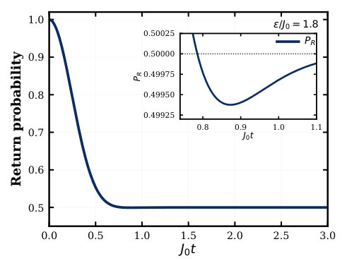
<figcaption class="paper-figure-caption"><b>Fig 1.</b> FIG. 1. Return probability dynamics for the Ising interaction with quasi-static coupling disorder at ϵ/J0 = 1.8 for all three scenarios, S1, S2, and S3. The inset magnifies the long-time behavior, revealing the weak non monotonic variation of the return probability around PR = 1/2.</figcaption>
</figure>
<figure class="paper-figure-card">

<figcaption class="paper-figure-caption"><b>Fig 2.</b> FIG. 3. Comparison of the ℓ1-norm of coherence dynamics in S2 and S3 for the Ising interaction at strong disorder ϵ/J0 = 1.8. While both dynamics appear nearly monotonic on the scale of the main panel, the inset magnifies the first revival region and reveals a small but finite revival in S3, whereas the Haar-averaged S2 dynamics remains monotonic.</figcaption>
</figure>
<figure class="paper-figure-card">

<figcaption class="paper-figure-caption"><b>Fig 3.</b> FIG. 2. This figure shows the critical ratio rc = ϵ/J0 required for monotonic decay of ℓ1-norm of coherence as a function of initial bath longitudinal polarization(or equivalently popula- tion imbalance) mz. The curve is symmetric about mz = 0 and the divergence at mz = 0 indicates the absence of a finite critical ratio for maximally coherent initial bath states.</figcaption>
</figure>
<figure class="paper-figure-card">
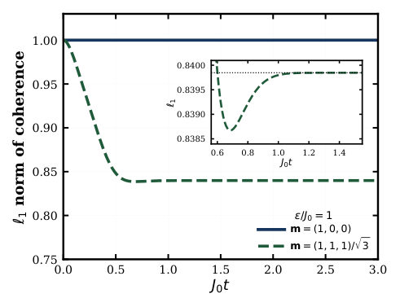
<figcaption class="paper-figure-caption"><b>Fig 4.</b> FIG. 4. ℓ1-norm of coherence for the Heisenberg interaction for S1 with quasi-static coupling disorder at ϵ/J0 = 1. The bath states m = (1, 0, 0) and m = (1, 1, 1)/ √</figcaption>
</figure>
<figure class="paper-figure-card">

<figcaption class="paper-figure-caption"><b>Fig 5.</b> FIG. 5. Comparison of ℓ1-norm of coherence for Heisenberg Interaction for S2 and S3 scenarios.While both dynamics ap- pear nearly monotonic on the main panel, the magnified insets reveal small but finite coherence revivals in both scenarios.</figcaption>
</figure>
</div>

<p><strong>Summary.</strong> This theoretical study explores the resilience of non-Markovian quantum dynamics when the coupling to the environment is subject to unresolved disorder. The authors demonstrate that while disorder can make memory effects unresolvable, the underlying structural non-Markovianity can be preserved, particularly when considering physical bath state fluctuations or transverse coupling terms.</p>
<p><strong>Why it may be interesting.</strong> This work directly addresses the crucial gap between theoretical structural properties (CP divisibility) and experimental observability (memory signatures) in open quantum systems, which is a major focus in quantum information and AMO physics.</p>
<details>
<summary>Detailed structure</summary>
<p><strong>Main problem.</strong> The paper investigates whether a quantum system's dynamics can remain structurally non-Markovian (CP indivisible) even when the memory effects become experimentally unresolvable due to unresolved quasi-static disorder in the system-bath coupling.</p>
<p><strong>Main result.</strong> Transverse exchange interactions and physical fluctuations in the bath state are shown to preserve the structural non-Markovianity (CP indivisibility) against disorder, even when memory signatures are suppressed.</p>
<p><strong>Method.</strong> The analysis uses process tomography to reconstruct disorder-averaged dynamical maps and employs CP divisibility as the primary criterion to distinguish between Markovian and non-Markovian dynamics.</p>
<p><strong>Model / system.</strong> The system is an open quantum system, specifically a spin environment (bath) coupled to a system spin. The coupling is modeled as a quasi-static random variable drawn from a Gaussian distribution, and the analysis compares pure dephasing Ising interactions with anisotropic Heisenberg interactions.</p>
<p><strong>Key observables.</strong> CP divisibility, return probability ($P_R$), $\ell_1$-norm of coherence, and memory revivals.</p>
<p><strong>Important parameters / regimes.</strong> Disorder strength ($\epsilon$), bath polarization, and the presence/absence of transverse exchange coupling.</p>
<p><strong>Assumptions / limitations.</strong> The analysis distinguishes between the disorder-averaged map and the true realization-resolved dynamics, and notes that the disappearance of memory signatures does not imply CP divisibility.</p>
<p><strong>Figures summary.</strong> Not specified.</p>
<p><strong>Paper structure.</strong> The paper develops its argument by analyzing the pure dephasing case (fixed vs. fluctuating bath states) and then extends the findings to anisotropic Heisenberg interactions, using analytical extensions and exact diagonalization to confirm the robustness of non-Markovianity.</p>
</details>
<details>
<summary>Abstract</summary>
<p>We investigate how unresolved quasistatic disorder in system bath coupling affects non-Markovian dynamics in spin environments. The coupling is fixed within each experimental shot but varies between shots, so repeated shot tomography reconstructs a disorder averaged dynamical map. For a single spin bath with pure dephasing Ising interaction, disorder can drive a transition to CP-divisible dynamics for fixed bath preparations, with a critical strength set by bath polarization along the interaction axis. However, when the bath state fluctuates physically between shots, the averaged dynamics remain CP indivisible at any finite disorder strength. We extend these results analytically to inhomogeneously coupled pure dephasing baths of any number \(N\) of non-interacting spins. At any finite disorder strength, one unpolarized bath spin suffices to retain CP-indivisible dynamics, whereas a fully polarized bath yields Markovian (CP-divisible) dynamics. Dynamics with physically fluctuating bath states likewise remain non-Markovian (CP indivisible) at finite disorder for arbitrary \(N\) in the pure dephasing case. For anisotropic Heisenberg interactions, any nonzero transverse exchange eliminates the disorder driven transition to CP divisibility in a single spin bath. Exact diagonalization of anisotropic models with inhomogeneous couplings up to \(N=12\) reveals persistent trace distance revivals for fixed bath preparations, sampled Haar random preparations, and physically fluctuating bath states, showing that this effect of transverse exchange extends beyond a single bath spin. Increasing disorder still suppresses experimentally accessible revivals and can make memory effects unresolvable at finite measurement resolution even as the dynamics remain CP indivisible. Thus, transverse exchange and physical bath state fluctuations preserve dynamical indivisibility against unresolved coupling disorder.</p>
</details>
<p><sub><a href="#top">↑ back to top</a></sub></p>

<p><a id="paper-2610.17470"></a></p>
<h3 id="time-domain-observables-for-resonant-scattering-in-quantum-simulations-of-lattice-gauge-theory"><a href="http://arxiv.org/abs/2610.17470v1">Time-Domain Observables for Resonant Scattering in Quantum Simulations of Lattice Gauge Theory</a></h3>
<p><strong>Authors:</strong> Praveen Balaji, Patrick Draper, Enrico Rinaldi<br>
<strong>Type:</strong> both · <strong>Category:</strong> quantum information and computing · <strong>PDF:</strong> <a href="https://arxiv.org/pdf/2610.17470v1">https://arxiv.org/pdf/2610.17470v1</a><br>
<strong>Analysis basis:</strong> full PDF text, analyzed in chunks
<strong>Topic relevance:</strong> <code>QC/QI experiment</code> <strong>3/5</strong> · <code>analog quantum simulation</code> <strong>3/5</strong> · <code>methods for driven-dissipative</code> <strong>2/5</strong> · <code>quantum measurements</code> <strong>2/5</strong> · <code>Keldysh / 2PI / non-Gaussian methods</code> <strong>1/5</strong></p>
<div class="figure-strip-hint">↔ Scroll figures horizontally</div>
<div class="paper-figures-scroll">
<figure class="paper-figure-card">

<figcaption class="paper-figure-caption"><b>Fig 1.</b> Figure 1: Examples of the action of the □operator on a plaquette. The subscripts “a” and “c” denote the active and control links respectively. The singlet degrees of freedom (DoFs) on the vertices have been omitted for clarity. As seen in the picture on the left, the □operator generates flux: the vacuum |1⟩state transforms to a plaquette of all |3⟩states, which has non-zero electric density. The picture on the right demonstrates the change of flux as well, but with a different transition. Only one of the basis states the □ operator generates upon acting on the initial state is shown.</figcaption>
</figure>
<figure class="paper-figure-card">

<figcaption class="paper-figure-caption"><b>Fig 2.</b> Figure 2: Left: The lowest electric energy glueball states at strong coupling. We consider the scattering of the particles formed from these excitations and their dressings. Right: An example of a chain of plaquettes with PBCs.</figcaption>
</figure>
<figure class="paper-figure-card">
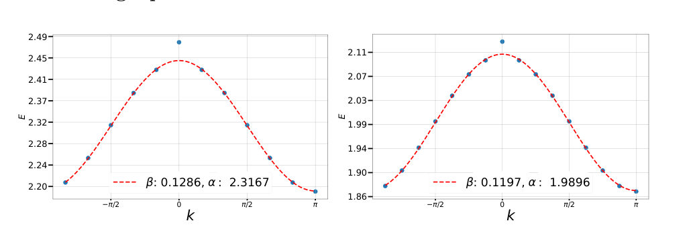
<figcaption class="paper-figure-caption"><b>Fig 3.</b> Figure 3: Single-particle dispersions for N = 12 (left) and N = 16 (right) for g = 1.3. The departure of the k = 0 state from the fitted dispersion is a truncation effect.</figcaption>
</figure>
<figure class="paper-figure-card">
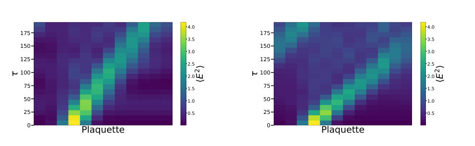
<figcaption class="paper-figure-caption"><b>Fig 4.</b> Figure 4: Evolution of a single packet over 12 plaquettes for g = 1.5 and g = 1.4, both with σk = 2.5 and k0 = 3. The packet is tracked by electric energy density across the chain.</figcaption>
</figure>
<figure class="paper-figure-card">
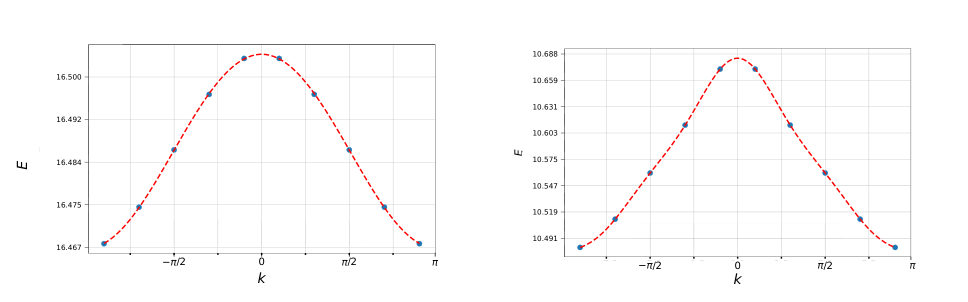
<figcaption class="paper-figure-caption"><b>Fig 5.</b> Figure 5: The |k, −k⟩two-particle scattering state dispersion relation for N = 12 for g = 1.8 (Left) and g = 1.5 (Right). The dispersion should follow the relation given in Eqn. 7. The red curve provides a fit over those parameters. At g = 1.8, the dispersion is given by α + β cos(k). As g is lowered, however, the fit includes higher harmonics.</figcaption>
</figure>
</div>

<p><strong>Summary.</strong> This paper tackles the difficult problem of simulating real-time scattering in lattice gauge theory by proposing novel time-domain observables. It first characterizes the resonance structure classically and then demonstrates the feasibility of measuring these properties on near-term quantum hardware using a simplified toy model. This work is crucial for developing quantum algorithms for non-equilibrium quantum field theory.</p>
<p><strong>Why it may be interesting.</strong> The focus on developing specific, measurable time-domain observables for resonance extraction directly bridges complex, strongly coupled QFT problems with the capabilities and limitations of current quantum computing hardware.</p>
<details>
<summary>Detailed structure</summary>
<p><strong>Main problem.</strong> The paper addresses the challenge of simulating non-perturbative, real-time quantum dynamics, specifically glueball scattering in lattice gauge theory, using near-term quantum hardware.</p>
<p><strong>Main result.</strong> The authors propose and demonstrate time-domain observables capable of extracting resonance properties from quantum simulations, showing feasibility on a real quantum hardware model.</p>
<p><strong>Method.</strong> The work combines classical characterization (exact diagonalization, mapping to Friedrichs model) with quantum simulation techniques, including constructing optimized Trotterized circuits for near-term hardware.</p>
<p><strong>Model / system.</strong> The system is pure SU(3) lattice gauge theory studied on a line-of-plaquettes lattice. The analysis uses a reduced electric basis and models the scattering process via a toy model Hamiltonian ($H = H_0 + \lambda V$).</p>
<p><strong>Key observables.</strong> Resonance width, avoided crossing gap ($\Delta_{AC}$), and time-domain observables designed to extract resonance properties from quantum evolution.</p>
<p><strong>Important parameters / regimes.</strong> Coupling constant ($g$), plaquette number ($N$), and the number of qubits required for simulation (e.g., 28 qubits for a 14-plaquette chain).</p>
<p><strong>Assumptions / limitations.</strong> The analysis relies on truncating the Hilbert space (e.g., using a 'B' truncation scheme) and using a toy model to approximate the full lattice QCD dynamics where perturbative methods fail.</p>
<p><strong>Figures summary.</strong> Figures illustrate the action of lattice operators, the lowest energy glueball states, and the comparison of simulation results (e.g., avoided crossings) between theoretical models and hardware simulation results.</p>
<p><strong>Paper structure.</strong> The paper progresses from defining the physical problem (lattice gauge theory dynamics) to developing theoretical tools (mapping to Friedrichs model, deriving observables), and finally demonstrating the feasibility of these tools on near-term quantum hardware using a simplified toy model.</p>
</details>
<details>
<summary>Abstract</summary>
<p>Quantum computing may allow unprecedented access to nonequilibrium quantum dynamics, including problems of interest in particle physics, like the real-time development of scattering processes. Although fault-tolerant simulations at scale are still in the future, recent advancements toward early fault-tolerant simulations motivate building increasingly elaborate benchmark problems in order to assess state-of-the-art capabilities and test new algorithms and observables. In this work, we study glueball scattering on a line-of-plaquettes lattice in pure $SU(3)$ lattice gauge theory. We characterize scattering of the lowest-energy glueball states using classical exact diagonalization methods, identifying the continuum resonance structure using real-time simulations and approximate analytic methods, and we propose time-domain observables for extracting properties of the resonance from quantum simulations. We furthermore construct a toy model that shares the spectral features of the lattice gauge theory and demonstrate extraction of the observables. Feasibility on near-term hardware is demonstrated through simulation of a resonant collision of this toy model on Quantinuum System Model $\texttt{H2-2}$, with a 14-plaquette chain encoded in 28 qubits. The Trotterized circuit after optimization and compression requires $\sim 25n$ entangling gates for $n$ Trotter steps.</p>
</details>
<p><sub><a href="#top">↑ back to top</a></sub></p>

<p><a id="paper-2610.18320"></a></p>
<h3 id="charge-selective-topological-locking-and-ultraslow-coarsening-in-magnetoelastic-media"><a href="http://arxiv.org/abs/2610.18320v1">Charge-selective topological locking and ultraslow coarsening in magnetoelastic media</a></h3>
<p><strong>Authors:</strong> Tirthankar Banerjee, Amaresh Jaiswal<br>
<strong>Type:</strong> theory · <strong>Category:</strong> statistical mechanics · <strong>PDF:</strong> <a href="https://arxiv.org/pdf/2610.18320v1">https://arxiv.org/pdf/2610.18320v1</a><br>
<strong>Analysis basis:</strong> full PDF text, analyzed in chunks
<strong>Topic relevance:</strong> <code>non-equilibrium universality</code> <strong>3/5</strong> · <code>Frenkel-Kontorova</code> <strong>1/5</strong> · <code>Keldysh / 2PI / non-Gaussian methods</code> <strong>1/5</strong> · <code>analog quantum simulation</code> <strong>1/5</strong> · <code>correlated / nonlocal dissipation</code> <strong>1/5</strong> · <code>driven-dissipative phase transition</code> <strong>1/5</strong> · <code>methods for driven-dissipative</code> <strong>1/5</strong> · <code>scars &amp; prethermalization</code> <strong>1/5</strong></p>
<div class="figure-strip-hint">↔ Scroll figures horizontally</div>
<div class="paper-figures-scroll">
<figure class="paper-figure-card">
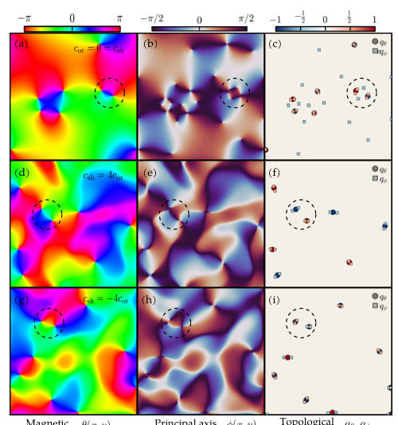
<figcaption class="paper-figure-caption"><b>Fig 1.</b> FIG. 1. Representative snapshots of the magnetic orientation θ , elastic principal-axis orientation ϕ , and the corresponding topological defects at time t = 200, for fixed isotropic mag- netostriction ciso = 1. Circles and squares denote magnetic (qθ = ±1) and elastic (qϕ = ±1/2) defects. Colors indi- cate topological charges. Dashed circles highlight representa- tive defect-annihilation clusters [25]. (a)–(c) cor = 0 = csh: Both magnetic vortex and anti-vortex bind to +1/2 elastic defects. (d)–(f) csh = 2 = 4cor: magnetic and elastic de- fects lock with the same sign of the respective topological charges. (g)–(i) csh = −2 = −4cor: charge-locking between magnetic and elastic defects with...</figcaption>
</figure>
<figure class="paper-figure-card">

<figcaption class="paper-figure-caption"><b>Fig 2.</b> FIG. 2. (a) Magnetic defect density ⟨nθ⟩= ⟨Nθ/LxLy⟩vs. time t for different choices of coupling constants. Data aver- aged over 40 realizations. Parameters: Lx = 512 = Ly, dx = 1, dt = 0.01. (b) ⟨vθ⟩ p</figcaption>
</figure>
<figure class="paper-figure-card">
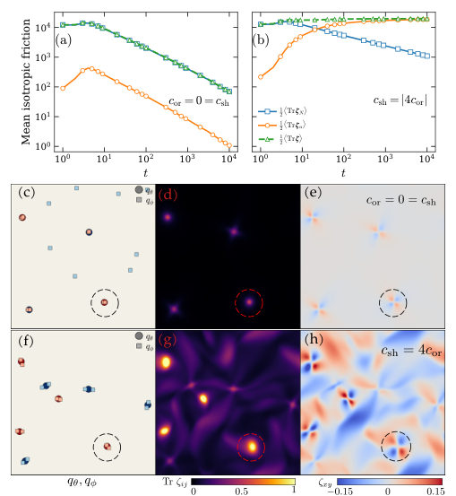
<figcaption class="paper-figure-caption"><b>Fig 3.</b> FIG. 3. Dissipative mechanics of magnetoelasticity. (a,b) Mean isotropic friction, 1 2Tr ζ (triangles), resolved into cor- responding magnetic (ζN, squares) and elastic (ζu, circles) contributions [Eqs. (12)-(13)]. For isotropic coupling csh = 0 = cor (a), dissipation is dominated by magnetic defect cores. In the presence of orientational coupling csh = 2 = 4cor (b), elastic friction generates much larger dissipation at suffi- ciently late times. Parameters: Lx = 512 = Ly, dx = 1, dt = 0.01, ciso = 1. Other parameters same as in Fig. 1. Data aver- aged over 40 initial realizations. (c–h) Representative defect configurations (c,f), Tr ζ (d,g), and off-diagonal component ζxy (e,h), for the...</figcaption>
</figure>
</div>

<p><strong>Summary.</strong> This theoretical work analyzes defect dynamics in magnetoelastic materials, showing that the symmetry of the magnetoelastic coupling dictates whether defects become topologically locked. Specifically, quadrupolar coupling enforces charge-selective locking and slows down the system's relaxation kinetics to an ultraslow power-law decay, a signature of anisotropic elastic friction.</p>
<p><strong>Why it may be interesting.</strong> The concept of controlling long-range dynamics (coarsening) through symmetry constraints in coupled order parameters is highly relevant to understanding non-equilibrium dynamics in complex quantum materials, bridging statistical mechanics with symmetry principles.</p>
<details>
<summary>Detailed structure</summary>
<p><strong>Main problem.</strong> The paper investigates how the symmetry of magnetoelastic coupling dictates the topological organization of defects and fundamentally alters the kinetics of phase ordering in coupled magnetic and elastic media.</p>
<p><strong>Main result.</strong> Quadrupolar coupling leads to charge-selective topological locking of defects and results in anomalously slow coarsening kinetics characterized by a power-law decay $t^{-2/5}$ and a dynamic exponent $z \simeq 5$.</p>
<p><strong>Method.</strong> The study employs continuum magnetoelastic theory, analyzing the free energy functional and deriving effective magnetic Hamiltonians by adiabatically eliminating the elastic field.</p>
<p><strong>Model / system.</strong> The system is a 2D magnetoelastic medium described by coupling an in-plane magnetic order parameter $N(\mathbf{r}, t)$ to an elastic displacement field $u(\mathbf{r}, t)$. The coupling includes isotropic and quadrupolar terms, which govern defect binding and topological constraints.</p>
<p><strong>Key observables.</strong> Defect densities ($\langle n_	heta(t) 
angle, \langle n_\phi(t) 
angle$), mean defect velocities ($\langle v_	heta 
angle$), and the dynamic exponent $z$.</p>
<p><strong>Important parameters / regimes.</strong> The relative strengths of the magnetoelastic coupling constants ($c_{	ext{or}}, c_{	ext{sh}}$) determine the locking regime (e.g., $q_\phi = q_	heta$ vs. $q_\phi = -q_	heta$).</p>
<p><strong>Assumptions / limitations.</strong> The analysis assumes purely relaxational dynamics and involves adiabatic elimination of the elastic field, which is valid for certain wave vectors.</p>
<p><strong>Figures summary.</strong> Figures illustrate defect binding patterns under isotropic coupling and show charge-locking mechanisms under quadrupolar coupling, alongside kinetic results for defect density decay.</p>
<p><strong>Paper structure.</strong> The paper progresses from defining the coupled free energy and dynamics, analyzing the effect of different coupling symmetries (isotropic vs. quadrupolar) on defect topology, deriving the effective magnetic energy by integrating out the elastic field, and finally demonstrating the resulting ultraslow coarsening kinetics.</p>
</details>
<details>
<summary>Abstract</summary>
<p>We demonstrate that the symmetry of magnetoelastic coupling governs the topological organization of composite defects and can qualitatively alter phase-ordering kinetics. In a two-dimensional theory of an in-plane magnetic vector coupled to elastic strain, we find that integer magnetic vortices bind pairs of elementary elastic half-defects. Isotropic magnetostriction produces a core-induced elastic winding independent of the magnetic charge, giving defect binding without charge locking and leaving the magnetic sector with essentially XY-like coarsening. In contrast, quadrupolar magnetoelastic coupling locks magnetic and elastic defect charges: continuous rotational symmetry favors $q_φ=q_θ$, whereas crystalline anisotropy can reverse the locking to $q_φ=-q_θ$. We reveal that both locking sectors display anomalously slow vortex annihilation: defect density shows a power-law decay $t^{-2/5}$, while the average defect-velocity scales as $t^{-4/5}$. These results are consistent with a dynamic exponent $z\simeq 5$. We show that this coarsening slowdown is associated with large anisotropic elastic friction. An adiabatic elimination of the elastic field reveals that isotropic magnetostriction merely renormalizes local magnetic interactions, whereas orientational coupling induces effective nonlocal interactions between magnetic spins. Our experimentally testable results thus establish magnetoelastic coupling symmetry as a means of controlling defect topology and ordering kinetics.</p>
</details>
<p><sub><a href="#top">↑ back to top</a></sub></p>

<p><a id="paper-2610.17683"></a></p>
<h3 id="gwptools-an-extensible-wolfram-language-framework-for-time-dependent-gaussian-wave-packet-dynamics"><a href="http://arxiv.org/abs/2610.17683v1">GWPTools: An extensible Wolfram Language framework for time-dependent Gaussian wave packet dynamics</a></h3>
<p><strong>Authors:</strong> Jeremy B. Maddox, Ismail Giliani, Carter M. Heck, Connor S. Mattingly<br>
<strong>Type:</strong> theory · <strong>Category:</strong> other · <strong>PDF:</strong> <a href="https://arxiv.org/pdf/2610.17683v1">https://arxiv.org/pdf/2610.17683v1</a><br>
<strong>Analysis basis:</strong> full PDF text, analyzed in chunks
<strong>Topic relevance:</strong> <code>methods for driven-dissipative</code> <strong>3/5</strong> · <code>quantum measurements</code> <strong>3/5</strong> · <code>Keldysh / 2PI / non-Gaussian methods</code> <strong>2/5</strong> · <code>analog quantum simulation</code> <strong>1/5</strong></p>
<div class="figure-strip-hint">↔ Scroll figures horizontally</div>
<div class="paper-figures-scroll">
<figure class="paper-figure-card">
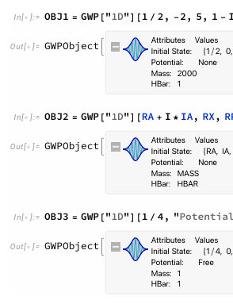
<figcaption class="paper-figure-caption"><b>Fig 1.</b> Figure 1: Visual representation of the GWPObject summary boxes generated by the GWP constructor for varying input parameters. The frontend interface provides immediate access to the top-level state metadata, while the underlying data container stores the full 11-element parameter bus utilized by the polymorphic dispatcher.</figcaption>
</figure>
<figure class="paper-figure-card">
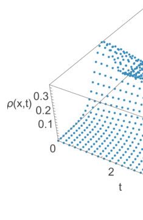
<figcaption class="paper-figure-caption"><b>Fig 2.</b> Figure 2: A three-dimensional visualization of the exact spatio-temporal probability den- sity grid (data) generated for the freely dispersing Gaussian wave packet (OBJ3). Because the data is generated algebraically, the surface avoids the numerical accumulation errors typical of discretized time-evolution solvers.</figcaption>
</figure>
<figure class="paper-figure-card">
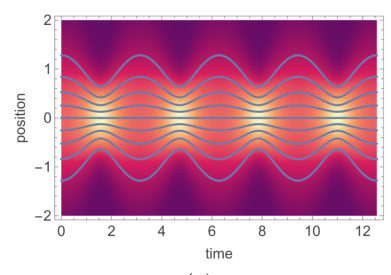
<figcaption class="paper-figure-caption"><b>Fig 3.</b> Figure 3: Exact Bohmian trajectories overlaid on the time-dependent spatial probabil- ity density ρ(x, t). (a) Evolution of a Gaussian wave packet within a standard har- monic oscillator potential (&quot;HO&quot;), demonstrating periodic breathing and stable kinemat- ics. (b) Complex driven dynamics within a non-resonant forced harmonic oscillator (&quot;NonResonantForcedHO&quot;). In both cases, the hydrodynamic trajectories—corresponding to probability quantiles c ∈{1/10, 2/10, . . . , 9/10}—are generated algebraically by directly evaluating the exact inverse cumulative distribution function (&quot;XC&quot;). This analytical map- ping completely bypasses the need for numerical differential equation solvers,...</figcaption>
</figure>
<figure class="paper-figure-card">

<figcaption class="paper-figure-caption"><b>Fig 4.</b> Figure 4: Exact analytical dynamics of superposition states within a harmonic oscillator potential. The panels illustrate a displaced coherent state wave packet colliding with a stationary ground-state wave packet. Panels (a) and (c) display the antisymmetric superposition, showcasing the persistent probability node at the origin during the collision event (t = π/2). Panels (b) and (d) display the symmetric superposition, demonstrating constructive interference at the collision center.</figcaption>
</figure>
<figure class="paper-figure-card">
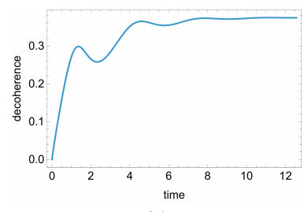
<figcaption class="paper-figure-caption"><b>Fig 5.</b> Figure 5: Exact propagation of a reduced density matrix simulating an open quantum sys- tem coupled to a harmonic environment. Panel (a) plots the time-dependent decoherence function, illustrating the continuous loss of quantum coherence as the system evolves. Panel (b) shows the exact spatio-temporal probability density ρ(x, t) overlaid with the position center parameter xt (solid line). The analytical evaluation captures the exact spatial broadening and environmental damping dictated by the Caldeira-Leggett master equation.</figcaption>
</figure>
</div>

<p><strong>Summary.</strong> This paper presents GWPTools, a specialized Wolfram Language framework designed to compute time-dependent Gaussian wave packet dynamics with high analytical rigor. It provides an exact symbolic-numeric engine to calculate key quantum diagnostics, such as quantum potential and entropy, for systems governed by quadratic potentials. The tool serves as both a pedagogical resource and a rigorous benchmark for validating various numerical simulation techniques in quantum physics.</p>
<p><strong>Why it may be interesting.</strong> This tool provides a powerful, exact analytical benchmark for studying time-dependent quantum dynamics, which is crucial for validating numerical methods used in AMO physics and open quantum systems.</p>
<details>
<summary>Detailed structure</summary>
<p><strong>Main problem.</strong> The paper addresses the need for a robust, exact analytical framework to model complex time-dependent quantum phenomena, specifically bridging the gap between classical trajectories and full quantum mechanics.</p>
<p><strong>Main result.</strong> The authors introduce GWPTools, an extensible Wolfram Language framework that provides an exact symbolic-numeric engine for calculating time-dependent Gaussian wave packet dynamics.</p>
<p><strong>Method.</strong> The framework uses the exact Gaussian ansatz and derives time evolution by solving coupled ODEs for the wave packet parameters, enabling exact calculation of expectation values and quantum diagnostics.</p>
<p><strong>Model / system.</strong> The model centers on time-dependent Gaussian wave packets (GWPs) governed by the Schrödinger equation, initially restricted to locally quadratic potentials $V(x, t) = V_0(t) + V_1(t)x + V_2(t)x^2$. It can be extended to handle various potentials and open-system dynamics.</p>
<p><strong>Key observables.</strong> Position and momentum expectation values ($\langle x^n 
angle, \langle p^n 
angle$), quantum potential, Bohmian trajectories, Wigner function, and Wehrl entropy ($S_{Wehrl}$).</p>
<p><strong>Important parameters / regimes.</strong> The core dynamics are governed by the time-dependent parameters ($\alpha_t, x_t, p_t, \gamma_t$) defining the Gaussian wave packet.</p>
<p><strong>Assumptions / limitations.</strong> Version 1.0.0 primarily assumes potentials are exactly quadratic for purely symbolic evaluation, although numerical extensions are provided for more complex potentials.</p>
<p><strong>Paper structure.</strong> The paper introduces the GWPTools framework, details the mathematical machinery for exact derivative calculation and expectation values, and demonstrates its modular scalability by prototyping complex phenomena like decoherence and interference.</p>
</details>
<details>
<summary>Abstract</summary>
<p>Gaussian wave packets provide an exact analytical foundation for modeling time-dependent quantum phenomena, effectively bridging the gap between classical trajectories and full quantum mechanics. We introduce GWPTools, a highly extensible Wolfram Language framework designed to compute exact time-dependent Gaussian wave packet dynamics using a unified symbolic-numeric architecture. Built upon a robust ``parameter bus'' and polymorphic dispatch, the software serves as an interactive pedagogical tool for exploring quantum theory and an exact algebraic engine for rigorously benchmarking numerical grid-based and trajectory methodologies. Version 1.0.0 focuses on exact time evolution in driven one-dimensional quadratic potentials. Native extensions into quantum hydrodynamics and phase space representations enable exact energy decompositions, analytical Bohmian trajectories, and symbolic derivations of quasi-probability distributions and information metrics. We demonstrate the framework's modular scalability by prototyping interference in superpositions, open-system decoherence, and coupled two-dimensional oscillators. Ultimately, these capabilities establish a versatile foundation for maximizing the reach of exact analytical modeling toward increasingly complex driven quantum systems.</p>
</details>
<p><sub><a href="#top">↑ back to top</a></sub></p>

<p><a id="paper-2610.17475"></a></p>
<h3 id="mathematical-framework-for-simulation-of-non-perturbative-cavity-optomechanics-with-plate-like-dielectrics"><a href="http://arxiv.org/abs/2610.17475v1">Mathematical framework for simulation of non-perturbative cavity optomechanics with plate-like dielectrics</a></h3>
<p><strong>Authors:</strong> Andrew Laeuger, Nancy Aggarwal<br>
<strong>Type:</strong> theory · <strong>Category:</strong> other · <strong>PDF:</strong> <a href="https://arxiv.org/pdf/2610.17475v1">https://arxiv.org/pdf/2610.17475v1</a><br>
<strong>Analysis basis:</strong> full PDF text, analyzed in chunks
<strong>Topic relevance:</strong> <code>quantum measurements</code> <strong>3/5</strong> · <code>Keldysh / 2PI / non-Gaussian methods</code> <strong>2/5</strong> · <code>methods for driven-dissipative</code> <strong>2/5</strong> · <code>driven-dissipative phase transition</code> <strong>1/5</strong> · <code>interference shaping light</code> <strong>1/5</strong></p>
<div class="figure-strip-hint">↔ Scroll figures horizontally</div>
<div class="paper-figures-scroll">
<figure class="paper-figure-card">
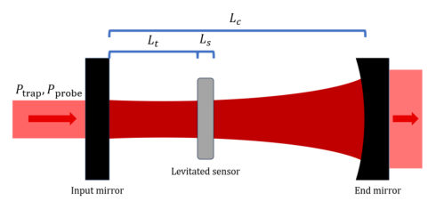
<figcaption class="paper-figure-caption"><b>Fig 1.</b> FIG. 1. Basic diagram of a plate-like levitated sensor trapped within a cavity. A spatially similar trap and probe beam, with powers Ptrap and Pprobe, respectively, enter the cavity of length Lc from the left. The planar sensor, with thickness Ls, is trapped a distance Lt away from the input mirror. Darker red shades indicate greater laser intensities. The sensor’s cross section captures nearly the entire beam profile for both the trap and probe lasers at the trap location. The probe beam’s primary use is readout of the sensor position, but it also cools the sensor’s motion along the cavity axis.</figcaption>
</figure>
<figure class="paper-figure-card">
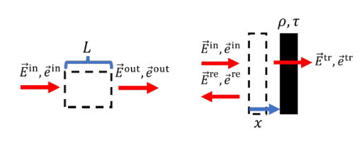
<figcaption class="paper-figure-caption"><b>Fig 2.</b> FIG. 2. Schematic diagram of quadrature component vec- tors for (left) a free space element of length L and (right) a moving mirror with amplitude reflectivity and transmissivity coefficients ρ and τ which is displaced from its mean position by a distance x ≪λ.</figcaption>
</figure>
<figure class="paper-figure-card">

<figcaption class="paper-figure-caption"><b>Fig 3.</b> FIG. 3. Schematic diagram of the carrier and sideband fields entering, propagating within, and leaving a moving dielectric slab (gray) of length Ls which experiences displacement x(t). Field vector labels are chosen for comparison to Fig. 4.</figcaption>
</figure>
<figure class="paper-figure-card">
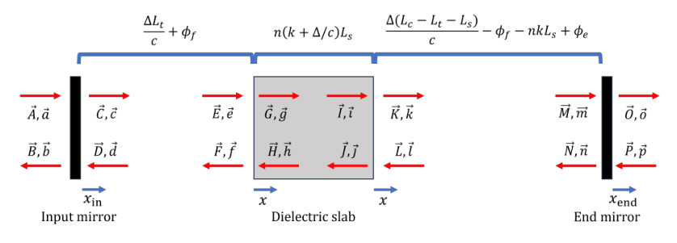
<figcaption class="paper-figure-caption"><b>Fig 4.</b> FIG. 4. Diagram of the carrier and sideband fields in the cavity with a levitated dielectric. The labels for vectors describing the fields at various locations will be used in a number of calculations within Sec. I. The relative phase accumulated over free propagation elements for a laser with detuning ∆is written above the blue brackets.</figcaption>
</figure>
<figure class="paper-figure-card">
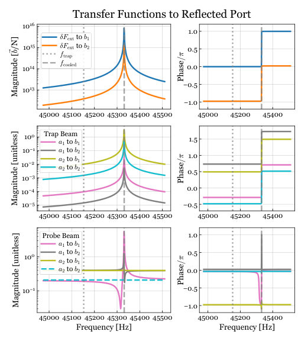
<figcaption class="paper-figure-caption"><b>Fig 5.</b> FIG. 5. A set of transfer functions to the two quadratures of the reflected readout port. Here, we set the parameters Ls = 0.25λ/n and ∆= −0.5κ. Gray lines mark the trap resonant frequency (dotted) and new resonant frequency af- ter including the probe beam’s optical spring effect (dashed). Transfer function input ports include an external force (top), trap beam field fluctuations (middle), and probe beam field fluctuations (bottom). For the laser fluctuation entries, we only plot the response to a1 and a2 here because their ana- logues in p1 and p2 do not provide any noteworthy additional information.</figcaption>
</figure>
</div>

<p><strong>Summary.</strong> This paper develops a rigorous, self-consistent theoretical framework for simulating cavity optomechanics when the sensor itself is a finite-thickness dielectric plate that strongly modifies the optical field. By extending the two-photon formalism, the authors can accurately calculate optical forces and mechanical back-action, providing essential tools for designing high-sensitivity quantum detectors.</p>
<p><strong>Why it may be interesting.</strong> This work directly tackles the non-perturbative regime in cavity QED/optomechanics, which is crucial for next-generation sensors like gravitational wave detectors, moving beyond simple small-particle approximations.</p>
<details>
<summary>Detailed structure</summary>
<p><strong>Main problem.</strong> The paper addresses the need for a self-consistent mathematical framework to model cavity optomechanics when a finite-thickness dielectric plate significantly restructures the intracavity optical field.</p>
<p><strong>Main result.</strong> The developed formalism successfully incorporates Fresnel reflection, internal propagation, optical forces, and mechanical back-action into the field equations, providing a systematic starting point for designing high-precision detectors.</p>
<p><strong>Method.</strong> The authors extend the vacuum two-photon formalism by developing propagation equations for the electric field components across the dielectric slab, treating the system self-consistently.</p>
<p><strong>Model / system.</strong> The system is a cavity optomechanical setup featuring a planar, finite-thickness dielectric sensor. The model treats the interaction non-perturbatively, accounting for the dielectric's influence on the entire optical mode structure.</p>
<p><strong>Key observables.</strong> Carrier and sideband transfer functions, optical forces (DC and AC), optomechanical cooling rates, and detector noise budgets.</p>
<p><strong>Important parameters / regimes.</strong> Dielectric thickness ($L_s$), cavity length ($L_c$), trap/probe power ($P_{	ext{trap}}, P_{	ext{probe}}$), and mechanical resonance parameters ($\Omega_{	ext{trap}}, Q_{eff}$).</p>
<p><strong>Assumptions / limitations.</strong> The plane wave approximation is used, and all optics are assumed lossless, although extensions to loss are noted as straightforward.</p>
<p><strong>Figures summary.</strong> Figure 1 shows the basic experimental setup with a planar dielectric sensor. Figure 3 illustrates the field components entering, propagating within, and leaving the moving dielectric slab.</p>
<p><strong>Paper structure.</strong> The paper establishes the limitations of existing perturbative models, develops the extended two-photon formalism using quadrature decomposition, derives the necessary transfer functions, and concludes by outlining the utility of the model for calculating detector response and noise budgets.</p>
</details>
<details>
<summary>Abstract</summary>
<p>Cavity optomechanical models typically treat a sensor either as a perturbative polarizable object in a pre-existing optical field, or solve the field at a fixed equilibrium and linearize in a fixed optical-mode basis. Neither self-consistently determines the spatially resolved cavity field, the optical force, the mechanical equilibrium, and the back-action when a finite-thickness dielectric plate intercepts the entire optical mode and restructures the intracavity field. In this companion paper to [1], we develop that treatment by extending the vacuum two-photon formalism to finite-thickness planar dielectrics, incorporating their Fresnel reflection, internal propagation, optical forces, and mechanical back-action directly into the field equations. We derive the carrier and sideband transfer functions needed to describe the coupled optical-mechanical system, including optomechanical cooling and the response to external perturbations. The result is a systematic starting point for calculating detector response and noise budgets for cavity experiments with intracavity dielectrics, including gravitational wave detectors deploying levitated sensors.</p>
</details>
<p><sub><a href="#top">↑ back to top</a></sub></p>

<p><a id="paper-2610.18211"></a></p>
<h3 id="unexpected-stabilization-of-a-single-math194math-charge-density-wave-in-pristine-1t-tisemath195math"><a href="http://arxiv.org/abs/2610.18211v1">Unexpected stabilization of a single-$q$ charge density wave in pristine 1T-TiSe$_2$</a></h3>
<p><strong>Authors:</strong> Kimoon Higashihira Han, Dongju Hwang, Dongsin Kim, Yeojin Ahn, Jaehun Cha, Seonggeon Gim, Gyubin Lee, Mingi Jho, Chan-young Lim, Sae Hee Ryu, Chris Jozwiak, Aaron Bostwick, Eli Rotenberg, Jonathan D. Denlinger, Makoto Hashimoto, Donghui Lu, Young Woo Choi, Gil Young Cho, Yeongkwan Kim<br>
<strong>Type:</strong> both · <strong>Category:</strong> strongly correlated electrons · <strong>PDF:</strong> <a href="https://arxiv.org/pdf/2610.18211v1">https://arxiv.org/pdf/2610.18211v1</a><br>
<strong>Analysis basis:</strong> full PDF text, analyzed in chunks
<strong>Topic relevance:</strong> <code>analog quantum simulation</code> <strong>3/5</strong> · <code>Keldysh / 2PI / non-Gaussian methods</code> <strong>2/5</strong> · <code>methods for driven-dissipative</code> <strong>2/5</strong> · <code>Frenkel-Kontorova</code> <strong>1/5</strong> · <code>driven-dissipative phase transition</code> <strong>1/5</strong></p>
<div class="figure-strip-hint">↔ Scroll figures horizontally</div>
<div class="paper-figures-scroll">
<figure class="paper-figure-card">

<figcaption class="paper-figure-caption"><b>Fig 1.</b> Fig. 1│ Overview of the chiral CDW phase in 1T-TiSe2. a, Displacement of ions overlaid</figcaption>
</figure>
<figure class="paper-figure-card">

<figcaption class="paper-figure-caption"><b>Fig 2.</b> Fig. 2│Temperature-dependent constant-energy maps. a, Constant-energy maps integrated</figcaption>
</figure>
<figure class="paper-figure-card">

<figcaption class="paper-figure-caption"><b>Fig 3.</b> Fig. 3│ Temperature-dependent energy-momentum cuts. a, Energy-momentum cuts</figcaption>
</figure>
<figure class="paper-figure-card">
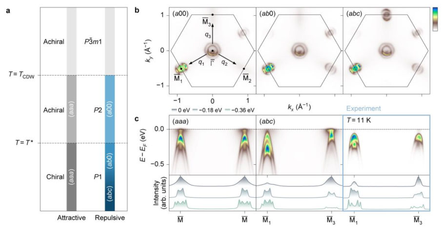
<figcaption class="paper-figure-caption"><b>Fig 4.</b> Fig. 4│Phase diagram and simulated angle-resolved photoemission spectra. a, Phase</figcaption>
</figure>
</div>

<p><strong>Summary.</strong> This work reveals that the charge density wave (CDW) order in 1T-TiSe2 does not form simultaneously, contrary to previous beliefs. Using ARPES and free-energy theory, the authors demonstrate that the three CDW components condense sequentially due to repulsive coupling between them. This establishes a new framework for understanding complex, multi-component electronic order in correlated materials.</p>
<p><strong>Why it may be interesting.</strong> The concept of sequential, competing order parameters driven by repulsive interactions is highly relevant to understanding complex phase transitions in strongly correlated electron systems, analogous to models in frustrated magnetism or orbital ordering.</p>
<details>
<summary>Detailed structure</summary>
<p><strong>Main problem.</strong> The paper challenges the long-standing assumption that the three symmetry-related subcomponents of the CDW order in 1T-TiSe2 condense simultaneously into a single triple-q state.</p>
<p><strong>Main result.</strong> The CDW order develops sequentially, starting with a unidirectional single-q component at the higher transition temperature, followed by the other two components at lower temperatures.</p>
<p><strong>Method.</strong> The study combines Angle-Resolved Photoemission Spectroscopy (ARPES) measurements with theoretical modeling, including free-energy analysis and first-principles calculations incorporating phonon anharmonicity.</p>
<p><strong>Model / system.</strong> The physical system is the layered transition-metal dichalcogenide 1T-TiSe2. The theoretical framework uses a Landau-Ginzburg free energy functional to model the competition between the three CDW subcomponents.</p>
<p><strong>Key observables.</strong> Temperature-dependent spectral weight of folded bands measured by ARPES, and the relative amplitudes of the three CDW components.</p>
<p><strong>Important parameters / regimes.</strong> The nature of the intercomponent coupling (repulsive vs. attractive) and the distinct transition temperatures ($T_{	ext{CDW}}$ and lower $T^*$).</p>
<p><strong>Assumptions / limitations.</strong> The analysis assumes that the sequential stabilization is governed by repulsive coupling among the three subcomponents, which is derived from free-energy minimization.</p>
<p><strong>Figures summary.</strong> Figures illustrate the temperature evolution of spectral weight at different high-symmetry points, constant-energy maps showing the sequential appearance of order, and phase diagrams contrasting attractive versus repulsive coupling scenarios.</p>
<p><strong>Paper structure.</strong> The paper proceeds by presenting ARPES evidence for the temperature-dependent condensation of the CDW components, followed by a theoretical explanation using free-energy analysis that establishes the repulsive interaction as the driving mechanism for sequential ordering.</p>
</details>
<details>
<summary>Abstract</summary>
<p>Over the past decade, studies revisiting the classical charge-density-wave system 1T-TiSe$_2$, long understood to host the $2 \times 2$ triple-$q$ order with equivalent subcomponents, have suggested that these subcomponents may not be identical, challenging a 50-year-old paradigm. Here, we demonstrate not only that these subcomponents are non-identical but also that they develop sequentially rather than simultaneously. By tracking folded-band features, angle-resolved photoemission spectroscopy reveals that a unidirectional $2 \times 1$ single-$q$ order stabilizes first, while the other two components emerge sequentially at lower temperatures, completing the triple-$q$ phase. Our free-energy analysis explains this hierarchy through repulsive coupling among the three subcomponents, as supported by first-principles calculations incorporating phonon anharmonicity. Consequently, the three subcomponents are inequivalent in both phase and amplitude. These results reconcile reported symmetry breaking and differing characteristic temperatures and establish a framework in which ostensibly simple, high-symmetry charge-density order emerges from temperature-dependent competition and cooperation among inequivalent subcomponents.</p>
</details>
<p><sub><a href="#top">↑ back to top</a></sub></p>

<p><a id="paper-2610.18175"></a></p>
<h3 id="non-hermitian-statistical-geometry"><a href="http://arxiv.org/abs/2610.18175v1">Non-Hermitian Statistical Geometry</a></h3>
<p><strong>Authors:</strong> Xi Hu, Yan-Qiong Ma, Su-Peng Kou<br>
<strong>Type:</strong> theory · <strong>Category:</strong> strongly correlated electrons · <strong>PDF:</strong> <a href="https://arxiv.org/pdf/2610.18175v1">https://arxiv.org/pdf/2610.18175v1</a><br>
<strong>Analysis basis:</strong> full PDF text, analyzed in chunks
<strong>Topic relevance:</strong> <code>analog quantum simulation</code> <strong>3/5</strong> · <code>Full counting statistics</code> <strong>1/5</strong> · <code>correlated / nonlocal dissipation</code> <strong>1/5</strong> · <code>driven-dissipative phase transition</code> <strong>1/5</strong> · <code>non-equilibrium universality</code> <strong>1/5</strong> · <code>quantum measurements</code> <strong>1/5</strong></p>
<div class="figure-strip-hint">↔ Scroll figures horizontally</div>
<div class="paper-figures-scroll">
<figure class="paper-figure-card">
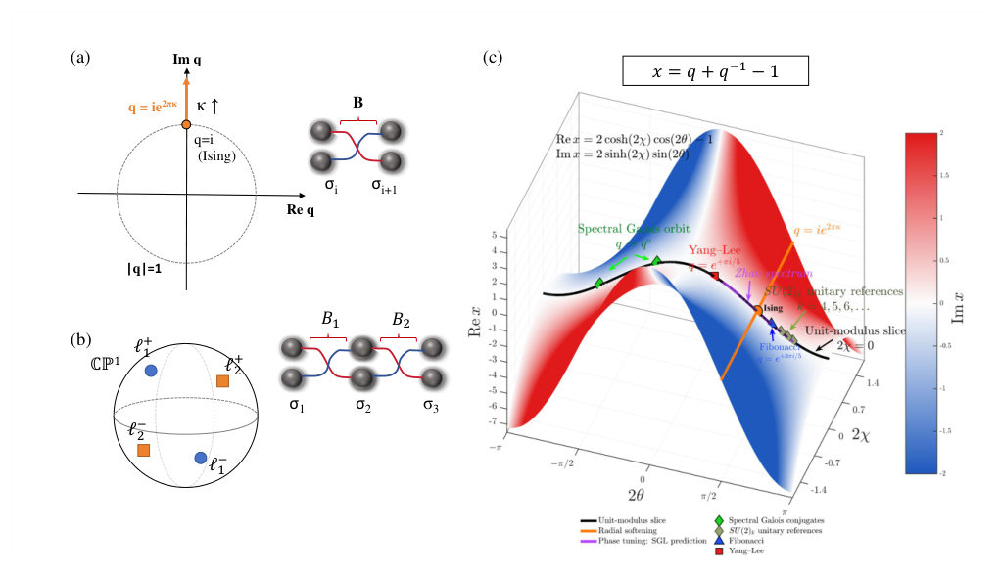
<figcaption class="paper-figure-caption"><b>Fig 1.</b> FIG. 1. Non-Hermitian softening and spectrum–geometry locking. (a) The projective eigenvalue ratio q = λ+/λ− characterizes a single two-channel exchange. The radial continuation q = ie2πκ extends the Ising reference q = i by changing relative channel amplification at fixed relative phase. (b) Two neighboring exchanges acting in a common logical space supply four ordered right-eigenlines. Their cross ratio x = cr(ℓ+ 1 , ℓ− 1 ; ℓ+ 2 , ℓ− 2 ) specifies the relative geometry; the sphere is schematic. (c) On the generic irreducible two-channel branch, Artin consistency imposes x = q + q−1 −1. For q = e2χ+2iθ, the horizontal coordinates are 2θ and 2χ, the height is Re x, and color encodes Im x....</figcaption>
</figure>
<figure class="paper-figure-card">

<figcaption class="paper-figure-caption"><b>Fig 2.</b> FIG. 2. Microscopic realization and geometric control in a five-arm Majorana network. (a) Five finite Kitaev arms coupled to a central Majorana γ0. The inset shows schematic projections of the junction-control loops C1 and C2 for neighboring exchanges. (b) Relative eigenline geometry extracted from full-Hamiltonian Kato holonomies along the designed radial branch. Open red circles and filled blue squares show the microscopic real and imaginary parts of x; the corresponding lines give Re x = −1 and Im x = 2 sinh(2πκ). (c) Projective Artin residual versus the independently evaluated spectral–geometric mismatch |xgeom −xspec|. Green circles denote the SGL protocol, orange diamonds the...</figcaption>
</figure>
<figure class="paper-figure-card">
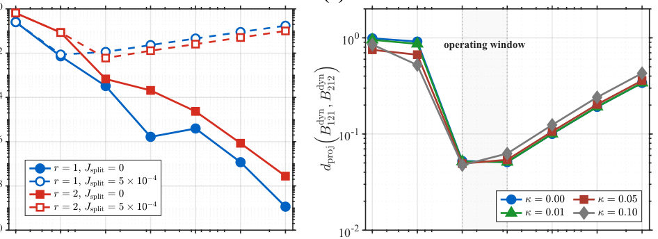
<figcaption class="paper-figure-caption"><b>Fig 3.</b> FIG. 3. Finite-time realization of geometric exchange. (a) At κ = 0.10, projective distance dproj(Bdyn r (T), BK,r) between full finite-time logical operations and their Kato references for neighboring exchanges r = 1 (blue circles) and r = 2 (red squares). Filled symbols and solid lines correspond to Jsplit = 0; open symbols and dashed lines correspond to the persistent splitting Jsplit = 5 × 10−4. With zero splitting, longer protocols approach the Kato references. Persistent splitting selects an intermediate window that balances nonadiabatic corrections and internal dynamical evolution. (b) Projective distance between the uninterrupted microscopic exchange words 121 and 212 for κ = 0,...</figcaption>
</figure>
<figure class="paper-figure-card">
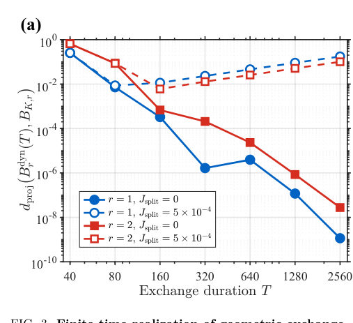
<figcaption class="paper-figure-caption"><b>Fig 4.</b> Figure 4(c) compares the independently reconstructed ∆xgeom with the two spectral responses ∆x(1,2) spec in the complex plane. The frozen two-dimensional protocol yields distinct single-exchange spectra and a neighboring-eigenframe re- sponse on comparable complex scales. Finite vortex sepa- ration produces differences between the relative-geometric response and the two spectral SGL predictions. The single- exchange spectra and relative eigenline geometry have distinct microscopic responses. SGL provides the alge- braic benchmark; finite separation and lattice geometry control the approach to that branch.</figcaption>
</figure>
<figure class="paper-figure-card">
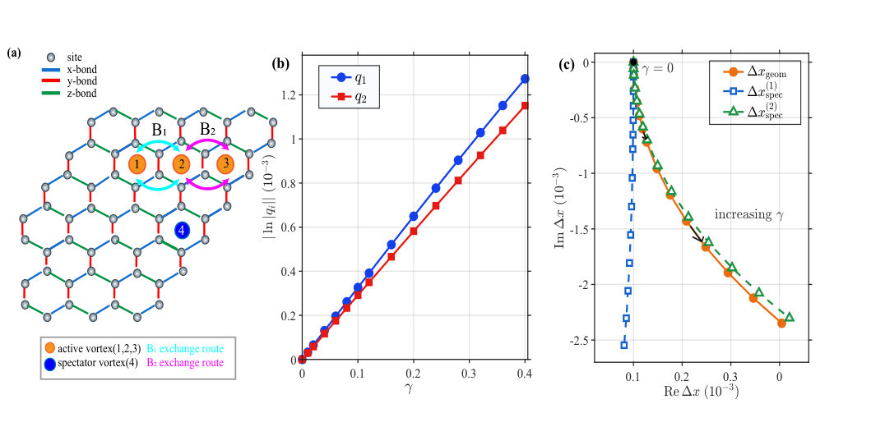
<figcaption class="paper-figure-caption"><b>Fig 5.</b> FIG. 4. Independent spectral and relative-geometric responses in a two-dimensional vortex protocol. (a) Schematic four-vortex configuration in the chiral Kitaev honeycomb model, with blue, red, and green links denoting x, y, and z bonds. Plaquette vortices 1, 2, 3 participate in the neighboring exchanges B1 : 1 ↔2 and B2 : 2 ↔3; vortex 4 is a spectator. The arrows indicate the exchange pairs schematically. Both protocols start from the same configuration and use the same fixed non-Hermitian bond texture. (b) Magnitudes of the single-exchange spectral responses | ln |q1|| and | ln |q2|| versus the microscopic non-Hermitian coupling γ. The signed values ln |qr| are reported in the...</figcaption>
</figure>
</div>

<p><strong>Summary.</strong> This work introduces non-Hermitian statistical geometry to study quantum statistics beyond the standard boson-fermion dichotomy. It derives a fundamental 'spectrum-geometry locking' relation that constrains how exchange data must behave when the system Hamiltonian is non-Hermitian. This framework is crucial for understanding the continuous extension of topological order in complex physical systems.</p>
<p><strong>Why it may be interesting.</strong> The explicit connection between spectral properties (eigenvalues) and geometric invariants (relative moduli) in a non-Hermitian setting provides a powerful, generalized framework for understanding topological order beyond standard unitary models.</p>
<details>
<summary>Detailed structure</summary>
<p><strong>Main problem.</strong> The paper develops a theory of non-Hermitian statistical geometry to understand how quantum statistics behave when the underlying Hamiltonian is non-Hermitian, relaxing the rigidity found in conventional topological phases.</p>
<p><strong>Main result.</strong> It establishes an exact spectrum-geometry locking relation ($x = q + q^{-1} - 1$) that constrains the exchange geometry, showing that non-Hermiticity enriches the response while braid consistency and fusion coherence further constrain it.</p>
<p><strong>Method.</strong> The authors employ advanced mathematical tools including Riesz projectors, Kato transport, and consistency checks derived from braid group relations (Artin relation) to map complex exchange spectra to relative geometric moduli.</p>
<p><strong>Model / system.</strong> The theory applies to particle exchange in two dimensions, relevant to fractional quantum Hall physics and topological quantum computation. It is tested using models like a five-arm Kitaev–Majorana network and a two-dimensional four-vortex Kitaev model.</p>
<p><strong>Key observables.</strong> Single-exchange projective spectrum ($q$), relative eigenline geometry ($x$), and the projective Kato curvature.</p>
<p><strong>Important parameters / regimes.</strong> The analysis focuses on the generic irreducible two-channel branch, requiring $q 
eq 1$ and $q^2 - q + 1 
eq 0$.</p>
<p><strong>Assumptions / limitations.</strong> The analysis is primarily restricted to the generic irreducible two-channel branch, and the comparison between local and global geometric constraints is central.</p>
<p><strong>Figures summary.</strong> Figures illustrate the progression from single-exchange ratios to relative geometry via a cross-ratio, culminating in the explicit spectrum-geometry locking relation $x = q + q^{-1} - 1$ on the generic branch.</p>
<p><strong>Paper structure.</strong> The paper progresses by first introducing the non-Hermitian generalization of exchange data, then deriving the exact spectrum-geometry locking relation using braid consistency, and finally testing this framework using concrete physical models and curvature diagnostics.</p>
</details>
<details>
<summary>Abstract</summary>
<p>Particle exchange in two dimensions gives rise to quantum statistics beyond the boson-fermion dichotomy, with central roles in fractional quantum Hall physics, topological quantum computation, and strongly correlated quantum matter. In conventional topological phases, microscopic exchange geometry is compressed into rigid braid and fusion data. We develop a theory of non-Hermitian statistical geometry in which relaxing Hermiticity softens these exchange data into a larger complex space of spectral and relative-geometric degrees of freedom. For two adjacent braid generators, a single projective exchange spectrum is insufficient: their relative eigenline geometry supplies an additional gauge-invariant modulus. On the generic irreducible two-channel branch, braid consistency locks these coordinates through an exact spectrum-geometry relation. Using Riesz projectors and Kato transport, we realize this geometry in a five-arm Kitaev-Majorana network and test spectral and relative-geometric responses in an independent two-dimensional four-vortex Kitaev model. Finite-time dynamics tests the exchange operation, microscopic fusion sewing tests its composition across fusion descriptions, and matched-spectrum controls isolate the role of relative geometry. Nonzero projective Kato curvature shows that braid-consistent, fusion-coherent exchange can depend on the control path. Non-Hermiticity thus exposes exchange geometry, braid consistency re-locks it, fusion coherence further constrains it, and projective flatness determines when geometric exchange becomes intrinsically topological.</p>
</details>
<p><sub><a href="#top">↑ back to top</a></sub></p>

<p><a id="paper-2610.18203"></a></p>
<h3 id="optical-parametric-amplification-of-spatiotemporal-optical-vortices"><a href="http://arxiv.org/abs/2610.18203v1">Optical parametric amplification of spatiotemporal optical vortices</a></h3>
<p><strong>Authors:</strong> Houan Teng, Chenhao Wan, Qiwen Zhan<br>
<strong>Type:</strong> experiment · <strong>Category:</strong> other · <strong>PDF:</strong> <a href="https://arxiv.org/pdf/2610.18203v1">https://arxiv.org/pdf/2610.18203v1</a><br>
<strong>Analysis basis:</strong> full PDF text, analyzed in chunks
<strong>Topic relevance:</strong> <code>interference shaping light</code> <strong>3/5</strong> · <code>quantum optics experiment</code> <strong>3/5</strong> · <code>analog quantum simulation</code> <strong>1/5</strong> · <code>driven-dissipative phase transition</code> <strong>1/5</strong></p>
<div class="figure-strip-hint">↔ Scroll figures horizontally</div>
<div class="paper-figures-scroll">
<figure class="paper-figure-card">

<figcaption class="paper-figure-caption"><b>Fig 1.</b> Fig. 1 Conceptual illustration of topology-preserving optical parametric amplification of spatiotemporal optical vortices. A spatiotemporal optical vortex interacts with a coherent pump field through a second-order nonlinear process, where optical parametric amplification enables simultaneous energy scaling and topological information transfer. (a,b) Complex-field representations of the Gaussian pump and the input STOV signal, respectively. The pump provides nonlinear energy transfer, while the signal carries a transverse optical topology encoded in the coupled spatiotemporal domain. (c) Schematic of the three-wave mixing interaction, where the pump, signal and idler fields are coherently...</figcaption>
</figure>
<figure class="paper-figure-card">
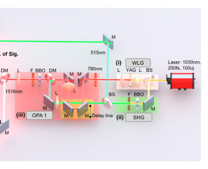
<figcaption class="paper-figure-caption"><b>Fig 2.</b> Fig. 2 Experimental platform for generation, amplification and characterization of spatiotemporal optical vortices. A two-stage OPA system is developed for STOV generation, amplification and complex field characterization. A broadband seed generated through supercontinuum generation (i) is first amplified in OPA1 (iii) to provide sufficient energy for spatiotemporal modulation and a coherent idler reference. The pump pulse is generated through second-harmonic generation (ii). A programmable pulse shaper (iv) consisting of a grating, cylindrical lens and spatial light modulator introduces spatial-spectral coupling to generate STOVs with controlled topological charge. The structured pulse is...</figcaption>
</figure>
<figure class="paper-figure-card">
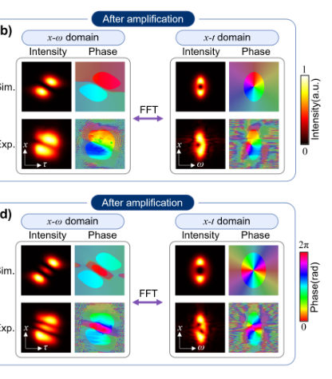
<figcaption class="paper-figure-caption"><b>Fig 3.</b> Fig. 3 Coherent amplification and topology preservation of spatiotemporal optical vortices. (a, b) Simulated and experimentally reconstructed complex fields of a STOV with ℓ=1 before and after OPA. (c, d) Corresponding results for a STOV with ℓ=2. For each case, intensity and phase distributions are shown in both the x−ω and x−t domains, linked by Fourier transformation. The amplified fields retain the phase singularities and topological structure of the input STOVs, with measured energy gains of approximately 63× and 58× for ℓ=1 and ℓ=2, respectively.</figcaption>
</figure>
<figure class="paper-figure-card">
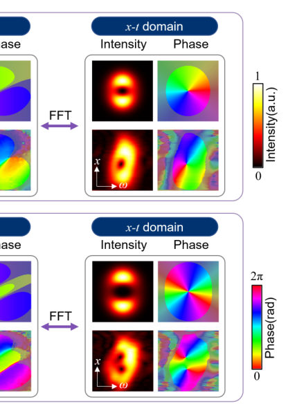
<figcaption class="paper-figure-caption"><b>Fig 4.</b> Fig. 4 | Phase-conjugated topology transfer in generated idler STOVs. (a,b) Simulated and experimentally reconstructed complex fields of idler STOVs generated from input signal vortices with and , respectively. The idler fields exhibit reversed phase winding and opposite topological charges ( and ) in both the x−ω and x−t domains, demonstrating phase-conjugated transfer of spatiotemporal topology through nonlinear frequency conversion.</figcaption>
</figure>
</div>

<p><strong>Summary.</strong> This paper presents the theoretical analysis and experimental demonstration of using Optical Parametric Amplification (OPA) to amplify Spatiotemporal Optical Vortices (STOVs). The research confirms that OPA can coherently boost the signal energy significantly while perfectly preserving the STOV's complex spatiotemporal topology. Crucially, it establishes OPA as a powerful tool for wavelength conversion and engineering structured light by transferring the vortex topology to newly generated idler frequencies.</p>
<p><strong>Why it may be interesting.</strong> This work is highly relevant to quantum optics and open quantum systems because it treats structured light (vortices) as a quantum-like degree of freedom (topological charge) that can be coherently amplified and transferred using nonlinear optical processes, analogous to quantum state manipulation.</p>
<details>
<summary>Detailed structure</summary>
<p><strong>Main problem.</strong> The primary goal is to demonstrate the coherent amplification of Spatiotemporal Optical Vortices (STOVs) and to utilize this process to achieve wavelength tunability for structured light.</p>
<p><strong>Main result.</strong> The authors successfully demonstrated that Optical Parametric Amplification (OPA) can enhance the STOV signal energy by a factor of $\sim 60$ while robustly preserving its spatiotemporal topology. Furthermore, the generated idler field inherits a phase-conjugated topology ($\ell_{idler} = -\ell_{signal}$).</p>
<p><strong>Method.</strong> The study combines theoretical analysis of coupled-wave equations with an experimental platform involving a two-stage OPA system. Characterization relies on spatially resolved spectral interferometry to reconstruct complex spatiotemporal fields.</p>
<p><strong>Model / system.</strong> The physical system is the nonlinear interaction within an OPA process (three-wave mixing) involving pump, signal, and idler fields. STOVs are defined by phase singularities in the spatiotemporal domain, characterized by a topological charge $\ell$.</p>
<p><strong>Key observables.</strong> Topological charge ($\ell$), pulse energy enhancement factor ($\sim 60$), spectral tunability (visible to near-IR), and the phase-conjugated relationship between signal and idler topologies.</p>
<p><strong>Important parameters / regimes.</strong> The process is governed by the simultaneous conservation of energy, linear momentum, and spatiotemporal orbital angular momentum. The undepleted pump approximation is used in the analysis.</p>
<p><strong>Assumptions / limitations.</strong> The analysis relies on the undepleted pump approximation. The observed reshaping effects are interpreted as gain-induced spectral reorientation rather than rigid rotation.</p>
<p><strong>Figures summary.</strong> Figures illustrate the conceptual process of STOV amplification and topology transfer via OPA, showing the setup, the retention of $\ell=1$ and $\ell=2$ topologies on the signal, and the generation of idler fields with opposite topological charges.</p>
<p><strong>Paper structure.</strong> The paper progresses from theoretical modeling of the coupled-wave equations governing STOV amplification to the experimental realization using a two-stage OPA setup. Key sections detail the measurement of energy gain, the verification of topology preservation, and the demonstration of topology transfer to the idler field.</p>
</details>
<details>
<summary>Abstract</summary>
<p>Spatiotemporal optical vortices (STOVs) are structured light featuring a phase singularity in the spatiotemporal domain, exhibiting unique topology that couples spatial and temporal dimensions. To date, amplification of STOVs remains unexplored, and their wavelength tunability is limited by available light sources. In this work, we present the theoretical analysis and experimental demonstration of optical parametric amplification (OPA) of STOVs. The pulse energy of the STOV signal is enhanced by a factor of 60, while its spatiotemporal structure is robustly preserved. The generated idler inherits the phase-conjugated STOV topology with the opposite topological charge, governed by simultaneous conservation of energy, linear momentum, and spatiotemporal orbital angular momentum. The intrinsic wavelength-conversion capability of OPA further provides a route towards spectrally tunable STOV generation, spanning from visible to near-infrared wavelength regimes. This work paves the way toward further development of multi-stage amplification architectures, facilitating applications of wavelength-tunable spatiotemporally structured light at ultrahigh intensities.</p>
</details>
<p><sub><a href="#top">↑ back to top</a></sub></p>

<p><a id="paper-2610.18495"></a></p>
<h3 id="steering-the-fidelity-in-state-preparation-on-noisy-bosonic-systems-with-risk-seeking-optimization"><a href="http://arxiv.org/abs/2610.18495v1">Steering the Fidelity in State Preparation on Noisy Bosonic Systems with Risk-Seeking Optimization</a></h3>
<p><strong>Authors:</strong> Riccardo Piantoni, Riccardo Pellini, Maurizio Ferrari Dacrema, Paolo Cremonesi<br>
<strong>Type:</strong> theory · <strong>Category:</strong> quantum information and computing · <strong>PDF:</strong> <a href="https://arxiv.org/pdf/2610.18495v1">https://arxiv.org/pdf/2610.18495v1</a><br>
<strong>Analysis basis:</strong> full PDF text, analyzed in chunks
<strong>Topic relevance:</strong> <code>methods for driven-dissipative</code> <strong>3/5</strong> · <code>quantum measurements</code> <strong>3/5</strong> · <code>correlated / nonlocal dissipation</code> <strong>1/5</strong> · <code>driven-dissipative phase transition</code> <strong>1/5</strong></p>
<div class="figure-strip-hint">↔ Scroll figures horizontally</div>
<div class="paper-figures-scroll">
<figure class="paper-figure-card">

<figcaption class="paper-figure-caption"><b>Fig 1.</b> Low-resolution page preview, page 2</figcaption>
</figure>
<figure class="paper-figure-card">

<figcaption class="paper-figure-caption"><b>Fig 2.</b> Low-resolution page preview, page 3</figcaption>
</figure>
<figure class="paper-figure-card">

<figcaption class="paper-figure-caption"><b>Fig 3.</b> Low-resolution page preview, page 4</figcaption>
</figure>
<figure class="paper-figure-card">

<figcaption class="paper-figure-caption"><b>Fig 4.</b> Low-resolution page preview, page 5</figcaption>
</figure>
<figure class="paper-figure-card">
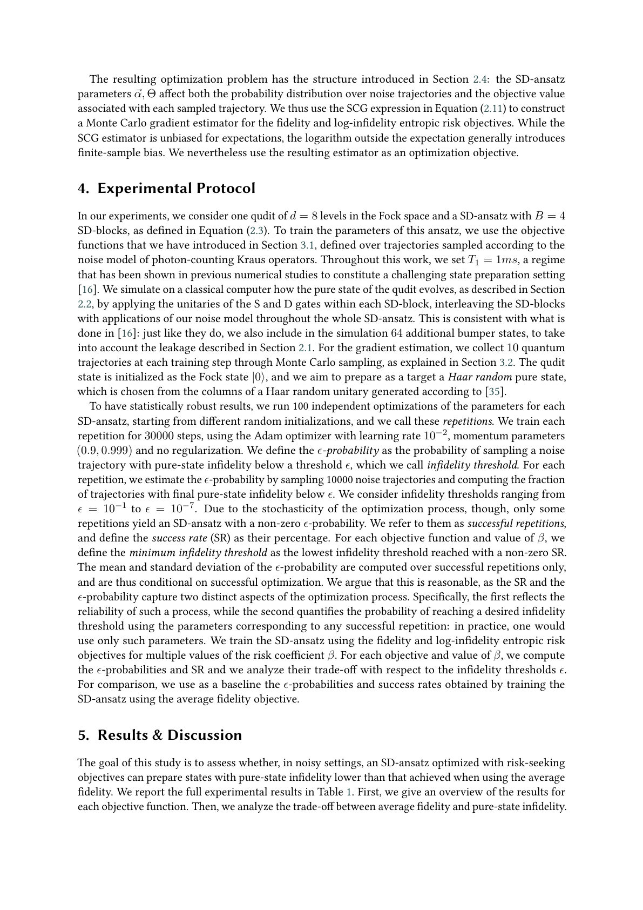
<figcaption class="paper-figure-caption"><b>Fig 5.</b> Low-resolution page preview, page 6</figcaption>
</figure>
</div>

<p><strong>Summary.</strong> This paper introduces risk-seeking optimization to improve state preparation fidelity on noisy bosonic quantum systems. By optimizing objectives based on the entire distribution of noise outcomes rather than just the average, the authors demonstrate a method to achieve significantly higher fidelity for a guaranteed subset of states. This offers a crucial tool for designing robust quantum algorithms in realistic, noisy hardware.</p>
<p><strong>Why it may be interesting.</strong> This work provides a sophisticated, mathematically rigorous framework for optimizing quantum processes under realistic noise, moving beyond simple expectation values to control the probability distribution of outcomes, which is crucial for fault-tolerant quantum computation.</p>
<details>
<summary>Detailed structure</summary>
<p><strong>Main problem.</strong> The paper addresses the limitation of optimizing only the average fidelity during state preparation on noisy bosonic quantum computers, which fails to account for the full distribution of fidelities across noise realizations.</p>
<p><strong>Main result.</strong> Using risk-seeking optimization objectives can significantly reduce the infidelities of specific pure states by up to four orders of magnitude compared to standard average fidelity optimization.</p>
<p><strong>Method.</strong> The authors adapt risk-sensitive optimization, borrowing from Reinforcement Learning, to define objective functions based on entropic risk measures applied to quantum trajectories.</p>
<p><strong>Model / system.</strong> The system is a bosonic quantum computer (qudit) undergoing state preparation using a variational ansatz (SD-ansatz) in a noisy environment characterized by photon loss.</p>
<p><strong>Key observables.</strong> Fidelity (pure and average), $\epsilon$-probability (probability of achieving high fidelity), and Success Rate (SR).</p>
<p><strong>Important parameters / regimes.</strong> Risk coefficient ($eta$), infidelity threshold ($\epsilon$), and the noise parameters like the cavity decoherence time ($T_1$).</p>
<p><strong>Assumptions / limitations.</strong> The evolution caused by photon loss is assumed to be Markovian, and the gradient estimation relies on Stochastic Computation Graphs (SCGs).</p>
<p><strong>Figures summary.</strong> The figures likely compare the performance metrics (e.g., $\epsilon$-probability vs. $eta$) obtained from risk-seeking objectives against those from standard average fidelity optimization.</p>
<p><strong>Paper structure.</strong> The paper introduces the problem of noisy state preparation, details the adaptation of risk-sensitive optimization using entropic risk measures, presents the methodology using quantum trajectory sampling, and concludes with comparative results demonstrating the benefits of the risk-aware approach.</p>
</details>
<details>
<summary>Abstract</summary>
<p>In order to execute quantum algorithms on bosonic quantum computers, it is necessary to encode their inputs into a desired target quantum state, with a process called state preparation. In real settings, state preparation methods operate in stochastic scenarios, where the prepared state is represented as a mixed state, that is a probabilistic ensemble of pure states. Therefore, existing state preparation methods optimize a variational ansatz by averaging over all possible sequences of photon loss events contained in the prepared ensemble, yielding an output state which approximates the desired target with a certain average fidelity. Such an approach, however, does not take into account directly the distribution of fidelities across states in the ensemble. In this work, we aim to maximize the fidelity of only a subset of pure states sampled from the prepared ensemble, at the cost of reducing the average fidelity overall. This trade-off is relevant when the goal is to obtain high-fidelity states with a certain probability, rather than maximizing the average fidelity of the prepared ensemble. We borrow and adapt objective functions from risk-sensitive optimization, a framework that optimizes specific characteristics of a distribution rather than only its expectation, and that has been successfully applied in Reinforcement Learning. In the considered experimental settings, our results show that the infidelities of some pure states in the prepared ensemble can be reduced by up to four orders of magnitude when using risk-seeking objectives, compared to those achieved using the standard optimization of the average fidelity. Furthermore, we show that it is possible to control the trade-off between the probability of obtaining high-fidelity states and the lowest infidelity threshold reached, providing the flexibility to select the operating point that best suits a certain application.</p>
</details>
<p><sub><a href="#top">↑ back to top</a></sub></p>

<p><a id="paper-2610.17499"></a></p>
<h3 id="an-aubry-andre-localized-optical-lattice-clock"><a href="http://arxiv.org/abs/2610.17499v1">An Aubry-André localized optical lattice clock</a></h3>
<p><strong>Authors:</strong> Shuo Ma, Anke Stölzel, Bennett Christensen, Zhuoli Ding, Dhruva Ganapathy, Andrew Householder, Genyue Liu, Shimon Kolkowitz<br>
<strong>Type:</strong> both · <strong>Category:</strong> other · <strong>PDF:</strong> <a href="https://arxiv.org/pdf/2610.17499v1">https://arxiv.org/pdf/2610.17499v1</a><br>
<strong>Analysis basis:</strong> full PDF text, analyzed in chunks
<strong>Topic relevance:</strong> <code>analog quantum simulation</code> <strong>3/5</strong> · <code>QC/QI experiment</code> <strong>1/5</strong> · <code>interference shaping light</code> <strong>1/5</strong> · <code>quantum measurements</code> <strong>1/5</strong> · <code>quantum optics experiment</code> <strong>1/5</strong></p>
<div class="figure-strip-hint">↔ Scroll figures horizontally</div>
<div class="paper-figures-scroll">
<figure class="paper-figure-card">

<figcaption class="paper-figure-caption"><b>Fig 1.</b> FIG. 1. A horizontal strontium optical lattice clock with two collinear lattices at incommensurate magic wavelengths and variable depths. (A) Schematic of the setup confining 87Sr in a horizontal one-dimensional optical lattice formed by 813 nm light co-aligned with a 497 nm lattice with tunable power in the retro-reflected beam allowing for a dipole trap for radial confinement, and a variable secondary lattice depth. Clock laser light propagates axially along the lattice, interrogating either a single ensemble of atoms via Rabi spectroscopy, or two ensembles via differential Ramsey spectroscopy. (B) (Top) Potential for an 813 nm lattice with a depth of 20 E813 R in dark red, with the...</figcaption>
</figure>
<figure class="paper-figure-card">

<figcaption class="paper-figure-caption"><b>Fig 2.</b> FIG. 2. Tunneling-induced broadening of Rabi spectra in individual 1D horizontal lattices, at 813 nm and 497 nm. (A)&amp;(B) Excitation fraction as a function of clock laser detuning for the 813 nm (left, red points) and 497 nm (right, blue points) lattices at various lattice depths, following a 𝜋–pulse with Ω = 2𝜋× 104 Hz and 2𝜋× 111 Hz, respectively. The theoretical curves (solid lines in matching colors) are overlaid with experimental data (round markers). The topmost panels summarize all spectra shown below on a common excitation fraction scale. (C) On-resonance excited-state fraction versus lattice depth for the 813 nm (red squares) and 497 nm (blue circles) lattices. Points are...</figcaption>
</figure>
<figure class="paper-figure-card">

<figcaption class="paper-figure-caption"><b>Fig 3.</b> FIG. 3. Localization induced recovery of the clock spectrum. (A) Excitation fraction in 3P0 versus clock detuning for the 813 nm primary lattice at 5.78 E813 R (orange points, top row) and the 497 nm primary lattice at 13.2 E497 R (green points, bottom row), for increasing secondary lattice depth. The lineshape predicted by the model is shown by the solid lines in matching color. Increasing the secondary lattice depth narrows the broadened spectrum and restores the carrier. (B)&amp;(C) FWHM and on-resonance excitation, respectively, versus secondary lattice depth for different primary lattice depths. The measured Rabi spectra (points) and calculated spectra (solid lines) are fitted with a...</figcaption>
</figure>
<figure class="paper-figure-card">

<figcaption class="paper-figure-caption"><b>Fig 4.</b> FIG. 4. Localization induced increase in coherence times in differential Ramsey spectroscopy. A differential Ramsey measurement repeated 20 times with varying phase between the two 𝜋/2–pulses maps out an ellipse per fixed Ramsey dark time when plotting excitation fraction in ensemble 1 parametrically over excitation fraction in ensemble 2. (A&amp;C) Measured ellipse contrast for three exemplary primary lattice depths and different disorder strength over Ramsey dark time. The contrast at a given primary lattice depth increases with disorder up to some threshold, until other decoherence effects dominate. Error bars represent the ±1𝜎uncertainties on the ellipse fit extracted from jackknifing....</figcaption>
</figure>
</div>

<p><strong>Summary.</strong> This paper presents a method to stabilize optical lattice clocks for space applications by inducing Aubry-André localization using a secondary lattice. By controlling the quasiperiodic potential, the technique suppresses detrimental atomic tunneling, which otherwise broadens the clock transition and limits coherence. This establishes AA localization as a practical tool for next-generation, high-precision quantum sensors.</p>
<p><strong>Why it may be interesting.</strong> This work directly addresses a major technological hurdle in quantum sensing by providing a robust, non-invasive method (AA localization) to control quantum coherence in a highly sensitive platform (optical lattice clocks).</p>
<details>
<summary>Detailed structure</summary>
<p><strong>Main problem.</strong> Operating high-precision optical lattice clocks in space requires suppressing atomic tunneling to maintain long coherence times, which is challenging in microgravity.</p>
<p><strong>Main result.</strong> The authors demonstrated that implementing Aubry-André localization using a secondary lattice can suppress tunneling, recovering a narrow, Fourier-limited clock spectrum and achieving coherence times up to 2 s.</p>
<p><strong>Method.</strong> The study combines theoretical modeling of the Aubry-André Hamiltonian with experimental measurements of Rabi spectra and Ramsey coherence times.</p>
<p><strong>Model / system.</strong> The system is an optical lattice clock using $^{87}	ext{Sr}$ atoms in a bichromatic lattice formed by two magic-wavelength lasers. The physics is governed by the Aubry-André Hamiltonian, which models the interplay between nearest-neighbor tunneling and quasiperiodic on-site energy modulation.</p>
<p><strong>Key observables.</strong> Rabi spectra (FWHM), Ramsey coherence times ($ au$), and the degree of spectral narrowing upon localization.</p>
<p><strong>Important parameters / regimes.</strong> Secondary lattice depth ($\Delta$), tunneling matrix element ($J$), and the ratio of lattice wavelengths ($eta$).</p>
<p><strong>Assumptions / limitations.</strong> The analysis often approximates the incommensurate potential using a periodic supercell, and coherence time modeling relies on empirical fits.</p>
<p><strong>Figures summary.</strong> Figures illustrate the spectral broadening in shallow single lattices versus the recovery of a narrow spectrum when a secondary lattice induces AA localization, alongside measurements of coherence time decay.</p>
<p><strong>Paper structure.</strong> The paper progresses from establishing the need to suppress tunneling in space-based clocks, demonstrating the AA localization effect via spectral measurements, and finally modeling systematic shifts like hyperpolarizability and line pulling in the resulting superlattice.</p>
</details>
<details>
<summary>Abstract</summary>
<p>Optical lattice clocks in space could improve satellite navigation systems and enable new tests of fundamental physics, including gravitational-wave detection and tests of relativity. In microgravity, atoms can tunnel to degenerate neighboring lattice sites, broadening the clock transition and limiting coherence times. We demonstrate Aubry-André localization in a bichromatic optical lattice formed by two magic-wavelength lasers, suppressing tunneling in a horizontal lattice clock emulating free fall. We recover a Fourier-limited clock Rabi spectrum and measure Ramsey coherence times of up to 2 s in shallow lattices, with up to 100-fold improvement over the delocalized regime. These results establish Aubry-André localization as a practical route to controlling tunneling in future space-based clocks, and open a path to operating terrestrial clocks at shallower lattice depths.</p>
</details>
<p><sub><a href="#top">↑ back to top</a></sub></p>

<p><a id="paper-2610.17447"></a></p>
<h3 id="distributed-quantum-phase-sensing-using-an-su11-perelomov-coherent-state-in-a-mach-zehnder-interferometer-network"><a href="http://arxiv.org/abs/2610.17447v1">Distributed quantum phase sensing using an SU(1,1) Perelomov coherent state in a Mach-Zehnder interferometer network</a></h3>
<p><strong>Authors:</strong> Seloua Boulifa, Abdallah Slaoui, Hanane EL Hadfi, Rachid Ahl Laamara<br>
<strong>Type:</strong> theory · <strong>Category:</strong> quantum information and computing · <strong>PDF:</strong> <a href="https://arxiv.org/pdf/2610.17447v1">https://arxiv.org/pdf/2610.17447v1</a><br>
<strong>Analysis basis:</strong> full PDF text, analyzed in chunks
<strong>Topic relevance:</strong> <code>interference shaping light</code> <strong>3/5</strong> · <code>quantum measurements</code> <strong>3/5</strong> · <code>analog quantum simulation</code> <strong>1/5</strong></p>
<div class="figure-strip-hint">↔ Scroll figures horizontally</div>
<div class="paper-figures-scroll">
<figure class="paper-figure-card">

<figcaption class="paper-figure-caption"><b>Fig 1.</b> FIG. 1. Distributed quantum sensing setup using N Mach–Zehnder (MZI) interferometers. (a) Entangled strategy, where a state |φ⟩, dis- tributed by an N-mode quantum circuit, feeds the various MZIs in an entangled form. (b) A separable strategy in which each MZI in- dependently receives a state |φk⟩. In both cases, ϕ1, . . . , ϕN represent the relative phase shifts introduced in each interferometer.</figcaption>
</figure>
<figure class="paper-figure-card">

<figcaption class="paper-figure-caption"><b>Fig 2.</b> FIG. 2. The optimal sensitivity for the entangled strategy as a func- tion of µ for N = 2, nξ = 100, a = 0.5 and τ = 0.8. The red dots represent the numerical evaluation of equation (40) and the red line represents the analytical prediction defined by (43). The vector µ is given by µT = 1√</figcaption>
</figure>
<figure class="paper-figure-card">

<figcaption class="paper-figure-caption"><b>Fig 3.</b> FIG. 4. (a) Optimal quantum sensitivity obtained by numerically optimizing the quantum Cram´er–Rao bound (QCRB) under the sep- arable strategy (48) (red points), as a function of µ. The reference curves correspond to (51) (blue line) and (50) (green line). (b) Op- timal average number of photons in the first mode as a function of the total average number of photons, for different values of µ. The parameters are those from Figure (2).</figcaption>
</figure>
<figure class="paper-figure-card">

<figcaption class="paper-figure-caption"><b>Fig 4.</b> FIG. 3. Optimal quantum sensitivity of the entanglement strategy (43) (N = 2, a = 0.5) for different values of µ: (a) as a function of nξ (|τ|2 = 0.7); (b) as a function of |τ|2 (nξ = 100). The same vector µ as the Fig (2).</figcaption>
</figure>
<figure class="paper-figure-card">
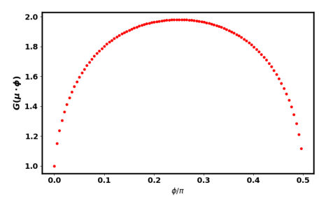
<figcaption class="paper-figure-caption"><b>Fig 5.</b> FIG. 5. The numerical evaluation of the sensitivity gain given by Eq. (52) as a function of µ. The other parameters are identical to that of Fig. (2)</figcaption>
</figure>
</div>

<p><strong>Summary.</strong> This theoretical study proposes using an entangled quantum state, derived from SU(1,1) Perelomov coherent states, across a network of Mach-Zehnder interferometers for distributed phase sensing. By comparing this entangled approach against a separable one, the authors prove that entanglement provides a systematic and quantifiable advantage, allowing the system to approach the Heisenberg limit for enhanced measurement precision.</p>
<p><strong>Why it may be interesting.</strong> This work provides concrete, resource-efficient guidelines for designing quantum metrology architectures, showing how entanglement in photonic circuits can surpass classical scaling limits for distributed sensing.</p>
<details>
<summary>Detailed structure</summary>
<p><strong>Main problem.</strong> The paper addresses the challenge of achieving high-precision, distributed quantum phase sensing by simultaneously estimating weighted linear combinations of relative phase shifts across multiple sensors.</p>
<p><strong>Main result.</strong> The proposed entangled strategy systematically outperforms the standard shot-noise limit and the separable approach, asymptotically achieving the Heisenberg limit for enhanced measurement accuracy.</p>
<p><strong>Method.</strong> The analysis employs multi-parameter quantum estimation theory, utilizing the Quantum Fisher Information Matrix (QFIM) and the Quantum Cramér-Rao Bound (QCRB) to quantify the ultimate sensing precision.</p>
<p><strong>Model / system.</strong> The system modeled is a reconfigurable network of N Mach-Zehnder interferometers (MZI). The quantum resource utilized is an SU(1,1) Perelomov coherent state, which is coherently distributed across the network modes.</p>
<p><strong>Key observables.</strong> Quantum Fisher Information Matrix (QFIM), Quantum Cramér-Rao Bound (QCRB), and the achievable phase sensitivity ($\Delta^2(\mu \cdot \phi)$).</p>
<p><strong>Important parameters / regimes.</strong> The number of interferometers (N), the weighting vector ($\mu$), and the optimal transmission coefficient of the first beam splitter (favoring maximum imbalance).</p>
<p><strong>Assumptions / limitations.</strong> The analysis assumes the ability to establish non-trivial quantum correlations via a single injected state and neglects the factor M (number of independent measurements), setting M=1.</p>
<p><strong>Figures summary.</strong> The notes refer to figures illustrating the comparison between the entangled (global) and separable (local) input states and their respective quantum circuits.</p>
<p><strong>Paper structure.</strong> The paper develops the theoretical framework by defining the physical system (MZI network), comparing the entangled versus separable resource allocation strategies, deriving the QCRB for both, and finally demonstrating the superior scaling and gain of the entangled approach.</p>
</details>
<details>
<summary>Abstract</summary>
<p>We present a theoretical study of distributed quantum sensing using a reconfigurable network of $N$ Mach--Zehnder interferometers to simultaneously estimate weighted linear combinations of relative phase shifts. The proposed scheme relies on injecting a Perelomov coherent state, generated from the SU(1,1) group representation, into one port of a passive quantum circuit while the remaining modes are initialized in the vacuum state, thereby establishing non-trivial quantum correlations among the sensors. Based on multi-parameter quantum estimation theory, our analysis shows that this entangled strategy outperforms the standard shot-noise limit and asymptotically achieves the Heisenberg limit. Furthermore, we highlight the crucial role of the first beam splitter's asymmetry; specifically, the optimal transmission coefficient that maximizes sensitivity corresponds to its maximum imbalance. Compared to a separable approach utilizing the same total average photon number, the entangled strategy yields a more efficient use of quantum resources, guaranteeing an accuracy gain between $1$ and $N$. This demonstrates that the entangled strategy is systematically superior to its separable counterpart. Ultimately, these results illustrate the potential of entangled distributed quantum sensor networks for high-precision measurements and provide clear guidelines for optimizing interferometric architectures in quantum metrology.</p>
</details>
<p><sub><a href="#top">↑ back to top</a></sub></p>

<p><a id="paper-2610.17682"></a></p>
<h3 id="enhanced-weak-field-sensing-using-detuned-squeezing"><a href="http://arxiv.org/abs/2610.17682v1">Enhanced weak-field sensing using detuned squeezing</a></h3>
<p><strong>Authors:</strong> Li-Wen Zhang, Yang Liu, Han-Jie Zhu, Wei Qin<br>
<strong>Type:</strong> theory · <strong>Category:</strong> other · <strong>PDF:</strong> <a href="https://arxiv.org/pdf/2610.17682v1">https://arxiv.org/pdf/2610.17682v1</a><br>
<strong>Analysis basis:</strong> full PDF text, analyzed in chunks
<strong>Topic relevance:</strong> <code>quantum measurements</code> <strong>3/5</strong> · <code>analog quantum simulation</code> <strong>2/5</strong> · <code>QC/QI experiment</code> <strong>1/5</strong> · <code>quantum optics experiment</code> <strong>1/5</strong></p>
<div class="figure-strip-hint">↔ Scroll figures horizontally</div>
<div class="paper-figures-scroll">
<figure class="paper-figure-card">
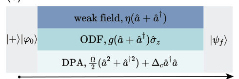
<figcaption class="paper-figure-caption"><b>Fig 1.</b> FIG. 1. (a) Schematic of the trapped-ion system used in our protocol. The spin and the motional mode are entangled through a spin-dependent ODF with strength g, while squeezing the motional mode is simultaneously applied to enhance both the coupling strength and the weak field to be measured. The spin has two states |↑⟩and |↓⟩, with a transition frequency ω and a decay rate Γ. The damping rate of the motional mode is denoted by κ. (b) Our single-step protocol for enhancing the sensitivity of a weak field, based on detuned squeezing and spin-motion entanglement.</figcaption>
</figure>
<figure class="paper-figure-card">

<figcaption class="paper-figure-caption"><b>Fig 2.</b> FIG. 3. Time evolution of the mean phonon number ⟨ˆa†ˆa⟩ for a fixed detuning ∆c and different squeezing degrees r over a single phase-space loop. The mean phonon number always reaches its maximum value ¯nmax at t = T/2. We have assumed that g = 0.1∆c and ∆c/2π = 1.0 kHz.</figcaption>
</figure>
<figure class="paper-figure-card">

<figcaption class="paper-figure-caption"><b>Fig 3.</b> Figure 3 shows the corresponding time evolution of the mean phonon number for different squeezing degrees. Reference [32] evaluates the QFI using a state that does not exist during the corresponding sensing process. To avoid this possible ambiguity, we calculate the QFI directly from the time-dependent state in Eq. (4), where the weak field is encoded throughout the evolution. Defining the signal-induced displacement as ζ = ηT, the corresponding QFI is</figcaption>
</figure>
<figure class="paper-figure-card">

<figcaption class="paper-figure-caption"><b>Fig 4.</b> FIG. 2. (a) Wigner functions of the motional mode during one complete phase-space loop. The initial state is a squeezed vacuum state ˆS(reiθ)|0⟩. At t = T, the motional state returns to its initial phase-space position, and at the same time the spin and motional degrees of freedom become disentangled. The parameters are Ω/2π = 5 kHz, g/2π = 4 kHz, η = 100 Hz, and T = 0.2 ms. (b) Schematic representation of the spin states at t = 0 (left) and t = T (right) on the Bloch spheres. The spin-motion entanglement maps the displacement induced by the signal into a rotation of the spin state, ˆU = eiϕ(T )ˆσz.</figcaption>
</figure>
<figure class="paper-figure-card">

<figcaption class="paper-figure-caption"><b>Fig 5.</b> FIG. 4. (a) Squeezing degree r and (b) displacement sensitivity ∆ζ as a function of the scaled interrogation time gT for different detunings ∆c. The dashed line in (b) refers to the SQL. The squeezing degree and the sensitivity depend on the ratio of ∆c/g.</figcaption>
</figure>
</div>

<p><strong>Summary.</strong> This paper details a quantum sensing protocol for trapped-ion systems that enhances weak-field measurement precision by combining detuned motional squeezing and spin-oscillator entanglement. By leveraging these two quantum resources, the protocol achieves an exponential improvement in sensitivity over standard methods. Crucially, this enhanced performance is shown to be robust against environmental noise, making it highly practical for quantum-enhanced sensing applications.</p>
<p><strong>Why it may be interesting.</strong> This work directly addresses quantum metrology using trapped ions, a canonical platform in AMO physics. The combination of squeezing and entanglement to achieve super-SQL scaling is a key theoretical advance for quantum sensing.</p>
<details>
<summary>Detailed structure</summary>
<p><strong>Main problem.</strong> The primary goal is to achieve measurement precision for weak signal sensing that surpasses the Standard Quantum Limit (SQL).</p>
<p><strong>Main result.</strong> The proposed protocol achieves an exponential improvement in sensitivity over unsqueezed cases, maintaining a distinct advantage below the SQL even in noisy environments.</p>
<p><strong>Method.</strong> The authors propose a streamlined protocol that simultaneously exploits detuned motional squeezing and spin-oscillator entanglement to enhance phase accumulation.</p>
<p><strong>Model / system.</strong> The study utilizes a trapped-ion spin-oscillator system. The dynamics are described by Hamiltonians involving motional modes (like the Bogoliubov mode $\hat{eta}$) coupled to the spin system ($\hat{\sigma}_z$).</p>
<p><strong>Key observables.</strong> The weak field signal is mapped onto a measurable spin phase shift, read out via $\langle\hat{\sigma}_y
angle_f$. Sensitivity is quantified using the Quantum Fisher Information (QFI).</p>
<p><strong>Important parameters / regimes.</strong> Key parameters include the squeezing degree ($r$), the detuning ($\Delta_c$), and the interrogation time ($T$). The sensitivity scales with $ar{n}_{\max}$ and the squeezing parameter $r$.</p>
<p><strong>Assumptions / limitations.</strong> The analysis assumes $\phi_D = \phi_E = 0$ for simplicity in the core derivation, although the general case is noted.</p>
<p><strong>Figures summary.</strong> Figure 1 schematically illustrates the single-step protocol in the trapped-ion system. Figure 2 shows Wigner functions of the motional mode, illustrating the evolution of squeezing and enclosed areas.</p>
<p><strong>Paper structure.</strong> The paper establishes the problem of surpassing the SQL, introduces the physical system and the combined squeezing/entanglement protocol, derives the enhanced sensitivity scaling, and finally analyzes the robustness of this gain against realistic noise sources.</p>
</details>
<details>
<summary>Abstract</summary>
<p>Achieving measurement precision beyond the standard quantum limit (SQL) is a fundamental object in quantum metrology. In this manuscript, we propose a streamlined protocol for weak signal sensing in a trapped-ion spin-oscillator system that simultaneously exploits detuned motional squeezing and spin-oscillator entanglement. By combining these two quantum resources, the phase accumulation in this spin system is significantly accelerated, as a result achieving an exponential improvement in the sensitivity over unsqueezed cases. Remarkably, we show that the significant metrological gain provided by our protocol persists in noisy environments, with the sensitivity remaining below the SQL. In particular, our protocol retains a distinct advantage in the short interrogation time regime, thus demonstrating the practical potential in quantum-enhanced sensing.</p>
</details>
<p><sub><a href="#top">↑ back to top</a></sub></p>

<p><a id="paper-2610.17219"></a></p>
<h3 id="fermionic-non-gaussianity-via-computable-measures-and-experimentally-accessible-bounds"><a href="http://arxiv.org/abs/2610.17219v1">Fermionic non-Gaussianity via computable measures and experimentally accessible bounds</a></h3>
<p><strong>Authors:</strong> Leela Ganesh Chandra Lakkaraju, Naga Dileep Varikuti, Philipp Hauke<br>
<strong>Type:</strong> theory · <strong>Category:</strong> strongly correlated electrons · <strong>PDF:</strong> <a href="https://arxiv.org/pdf/2610.17219v1">https://arxiv.org/pdf/2610.17219v1</a><br>
<strong>Analysis basis:</strong> full PDF text, analyzed in chunks
<strong>Topic relevance:</strong> <code>Keldysh / 2PI / non-Gaussian methods</code> <strong>3/5</strong> · <code>analog quantum simulation</code> <strong>3/5</strong> · <code>quantum measurements</code> <strong>1/5</strong></p>
<div class="figure-strip-hint">↔ Scroll figures horizontally</div>
<div class="paper-figures-scroll">
<figure class="paper-figure-card">
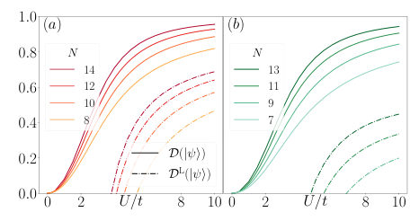
<figcaption class="paper-figure-caption"><b>Fig 1.</b> FIG. 1. Non-Gaussianity of the ground state of the Fermi–Hubbard chain (solid curves), quantified by the distance to the closest Gaus- sian state (D(|ψ⟩)) obtained via the iterative procedure of Theo- rem 1. The N fermionic modes are at [for even N, panel (a)] or near half-filling [odd N, (b)]. For all N considered, the non-Gaussianity increases with U/t. The lower bound obtained in Theorem 4 (dash- dotted) provides a genuine witness of non-Gaussianity at intermedi- ate and strong interactions and becomes tighter with increasing N.</figcaption>
</figure>
<figure class="paper-figure-card">
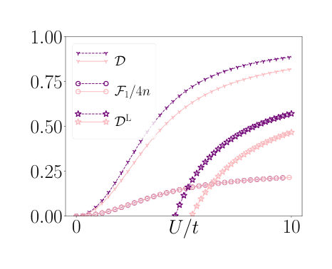
<figcaption class="paper-figure-caption"><b>Fig 2.</b> FIG. 2. Lower bounds on the non-Gaussianity of the Fermi–Hubbard ground state at half filling, for N = 8 (light) and N = 10 (dark) sites. Shown are the geometric measure D(|ψ⟩) obtained from the iterative procedure of Theorem 1 (crosses), the lower bound DL of Theorem 4 (stars), and the antiflatness bound F1(|ψ⟩)/4n (circles), with n = 2N the number of fermionic modes. Below U/t ≈5.0 for N = 10 and U/t ≈6.2 for N = 8, DL vanishes and antiflatness supplies the only non-trivial bound; beyond these thresholds the or- dering reverses. Antiflatness cannot exceed 1/4 by construction and is almost independent of system size; the two circle curves nearly coincide, whereas DL keeps tracking the...</figcaption>
</figure>
</div>

<p><strong>Summary.</strong> This paper introduces a geometric measure, the fidelity distance, to quantify fermionic non-Gaussianity in interacting quantum systems. It develops a scalable, non-perturbative method to compute this distance, providing a rigorous witness that depends only on measurable two- and four-point correlators. This offers a powerful diagnostic tool for characterizing strong correlations in models like the Fermi-Hubbard model.</p>
<p><strong>Why it may be interesting.</strong> This work provides a concrete, measurable diagnostic tool for non-Gaussianity in strongly correlated systems, which is crucial for interpreting data from quantum simulators like those based on ultracold atoms.</p>
<details>
<summary>Detailed structure</summary>
<p><strong>Main problem.</strong> The paper addresses the challenge of quantifying fermionic non-Gaussianity, which measures how much an interacting fermionic state deviates from a simple Gaussian state.</p>
<p><strong>Main result.</strong> They introduce a geometric measure—the fidelity distance—and derive a computable, non-perturbative witness for this non-Gaussianity that depends only on experimentally accessible two- and four-point correlators.</p>
<p><strong>Method.</strong> The core method involves defining the distance via the fidelity to the manifold of Gaussian states and deriving rigorous, computable bounds using a sharpened operator Jensen inequality.</p>
<p><strong>Model / system.</strong> The primary model studied is the Fermi-Hubbard model, which describes interacting fermions. The analysis focuses on the properties of the ground state $|\psi
angle$ relative to the Gaussian manifold $\mathcal{G}$.</p>
<p><strong>Key observables.</strong> Fidelity distance $D(
ho)$, two- and four-point fermionic correlators ($\mu, 	ext{Var}_\psi(\Gamma)$), and the derived witness bound $D_L$.</p>
<p><strong>Important parameters / regimes.</strong> Interaction strength ($U/t$), system size ($N$), and the regulator $\epsilon$ used in bounding techniques.</p>
<p><strong>Assumptions / limitations.</strong> The analysis relies on constructing bounds that are computationally tractable, specifically avoiding full state tomography by restricting measurements to two- and four-point correlators.</p>
<p><strong>Figures summary.</strong> Figures illustrate the non-Gaussianity $D(|\psi
angle)$ vs. $U/t$ for the Fermi-Hubbard chain, and compare various derived bounds ($D_G, D_L, D_{\lambda\max}$) against each other and against the true distance.</p>
<p><strong>Paper structure.</strong> The paper progresses by first defining the geometric measure (fidelity distance), then developing an iterative formalism to compute it, and finally deriving rigorous, experimentally accessible bounds using advanced inequalities.</p>
</details>
<details>
<summary>Abstract</summary>
<p>Interacting fermions owe both their non-trivial correlations and their computational power to their departure from Gaussianity. Yet, quantifying that departure geometrically faces two challenges: the Gaussian manifold is non-convex, and perturbative treatments are confined to weak interactions. Here, we introduce a geometric measure of fermionic non-Gaussianity, the fidelity distance of a target state to the manifold of fermionic Gaussian states. We construct an iteration formalism to numerically access it, applicable also at strong coupling. Further, we prove a sharpened operator Jensen inequality, of interest in its own right. We use it to derive a witness that involves only two- and four-point fermionic correlators. Numerical benchmarks on the one-dimensional Fermi--Hubbard model show that the quality of the witness improves with system size and, for strong coupling, is tighter than antiflatness. Our results open a scalable route to charting non-Gaussianity of strongly-interacting fermionic quantum simulators.</p>
</details>
<p><sub><a href="#top">↑ back to top</a></sub></p>
<hr>
<p>
<a href="index.html">← Index</a>
 · <a href="papers_01.html">← Previous</a> · <a href="papers_03.html">Next →</a>
</p>
<hr>

</body>
</html>
